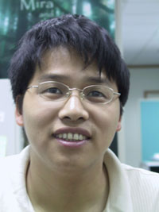
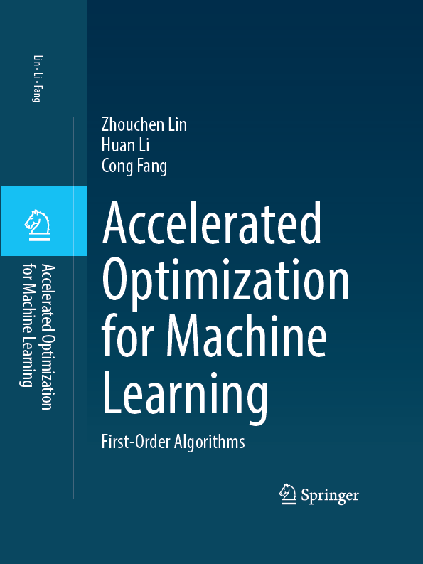
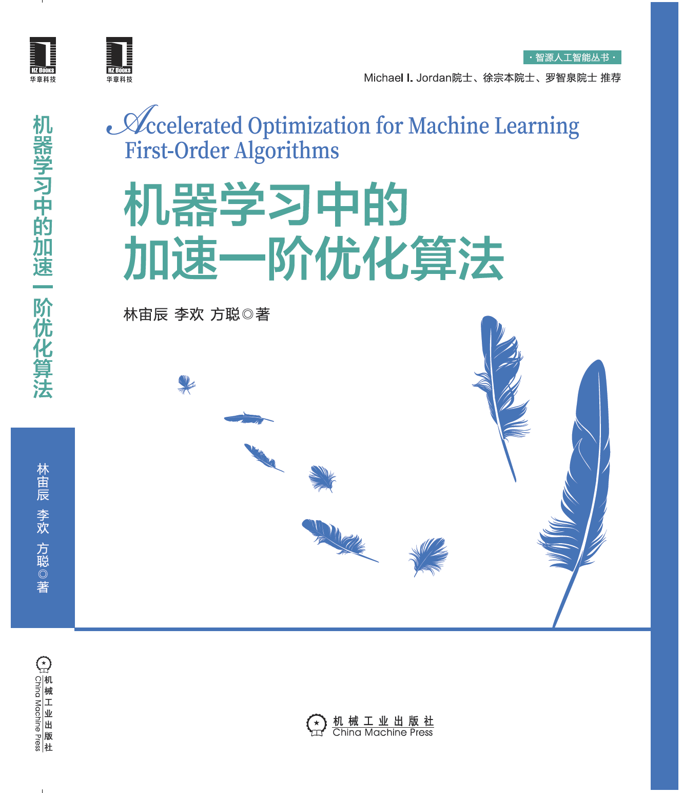
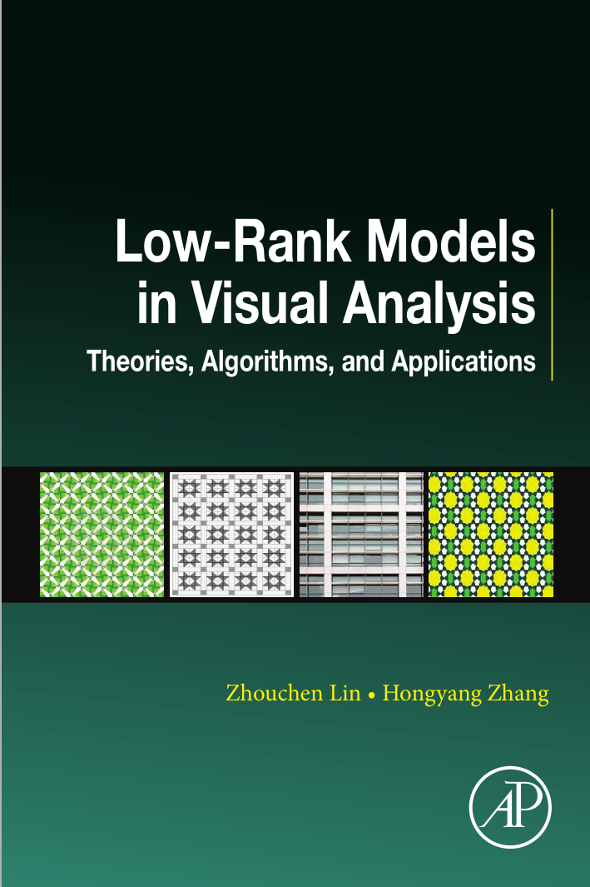
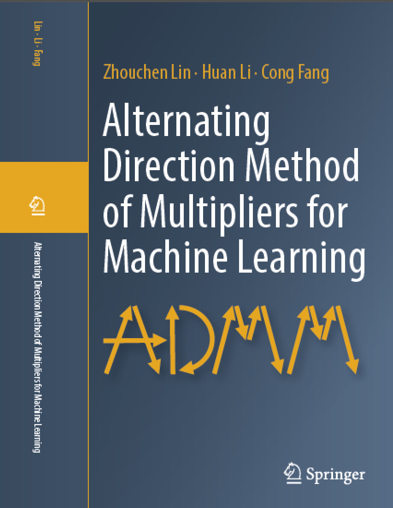
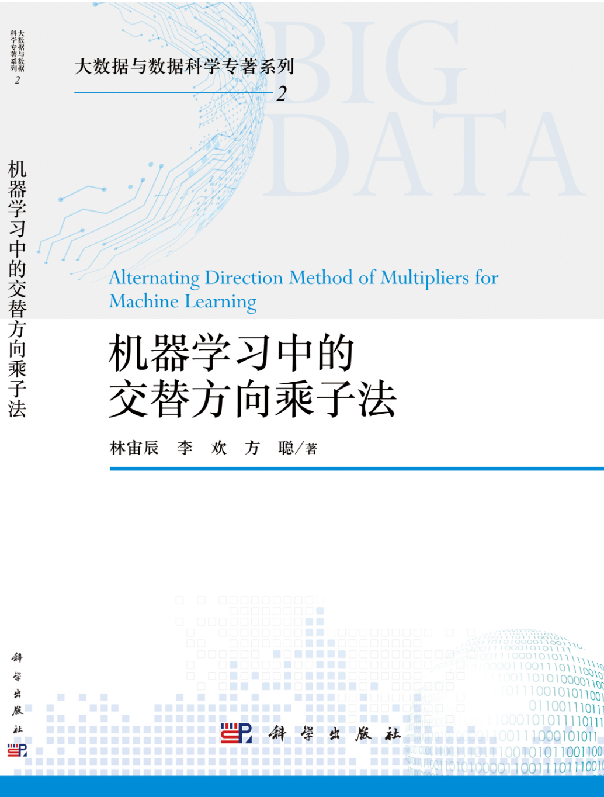

Welcome
to Zhouchen Lin's Homepage!
|

|
|
||
|
(Taken
in 2000)
|
(Taken
in 2009)
|
(Taken
in 2013) |
(Taken
in 2022) |

Dr.
Zhouchen Lin is a Professor with School
of Intelligence Science and Technology, Peking University.
I am now recruiting Ph.D.s who have strong mathematical abilities (however, this does not imply that you have to come from mathematics department) and great interest in theoretical analysis in order to enjoy with me how to use mathematics to solve real problems elegantly. Reference books (downloadable from https://libgen.is/, VPN required):
1. Amir Beck, First-order Methods in Optimization, SIAM, 2017.
2. Ulisses Braga-Neto, Fundamentals of Pattern Recognition and Machine Learning, Springer, 2020.
3. Francis Bach, Learning Theory from First Principles, 2023.
Welcome to send me (zlin (at) pku (dot) edu (dot) cn) your detailed resume!
Here are the reading materials for rotating undergraduate students.
|
There is nothing more practical than a good theory. ---- Ludwig Boltzmann |
|
What I am most fond of are beautiful and simple theoretical ideas that can be translated into something that works. ---- Yann LeCun |
|
Theory without practice is empty, but equally, practice without theory is blind. ---- Immanuel Kant |
Highlights:
|
1. Five papers accepted to ICML 2025! Two papers accepted to IEEE TPAMI! I am invited to be a senior area chair of NeurIPS 2025, CVPR 2025 and ICML 2025! |
 |
 |  |
|
2. My book, Alternating Direction Method of Multipliers for Machine Learning (Chinese version, with minor errors in English version corrected), has been published by Science Press! |
|||
|
3. My book, Alternating Direction Method of Multipliers for Machine Learning, has been published by Springer! |
|||
|
4. My book, Accelerated Optimization for Machine Learning: First-Order Algorithms (Chinese version, with errors in English version corrected), has been published! |
 |  |
|
|
5. My book, Accelerated Optimization for Machine Learning: First-Order Algorithms, has been published by Springer! Michael Jordan wrote one of the forewords! |
|||
|
6. My book, Low-Rank Models in Visual Analysis: Theories, Algorithms, and Applications, has been published by Academic Press! 7. My book, Talent Cultivation Program for General AI, has been published by Peking University Press! |

Curriculum
Vitae:
|
Feb.
2012 – present:
|
Professor
|
Peking
University
|
Machine Learning, Optimization |
|
Mar.
2010 – Feb. 2012:
|
Lead
Researcher
|
Visual
Computing Group, Microsoft Research, Asia
|
Image
Processing, Pattern Recognition, Machine Learning,
Optimization
|
|
Sept.
2004 – Feb. 2010:
|
Researcher
|
Visual
Computing Group, Microsoft Research, Asia
|
Image
Processing, Computer Vision, Computer Graphics, Pattern Recognition,
Machine Learning
|
|
April 2002 - Aug. 2004: |
Researcher |
Multi-Modal User Interface Group, Microsoft Research, Asia |
Digital Ink, Digital Pen, Pattern Recognition, Machine Learning, Document Processing/Analysis, Biometrics, Numerical Computation, Coding Theory, Security |
|
July 2000 - March 2002: |
Associate Researcher |
Visual Computing Group, Microsoft Research, China |
Computer Vision and Computer Graphics |
|
April 1999 - Dec. 1999: |
Intern |
Visual Computing Group, Microsoft Research, China |
Computer Vision and Computer Graphics |
|
Sept. 1997 - July 2000: |
Doctoral Candidate |
Dept. of Mathematics, Peking University |
Image Processing, Computer Vision, Pattern Recognition |
|
Sept. 1995 - Aug. 1997: |
Master Candidate |
Dept. of Applied Mathematics, Hong Kong Polytechnic University |
Numerical Computation/Simulation |
|
Sept. 1993 - Aug. 1995: |
Master Candidate |
Dept. of Mathematics, Peking University |
Image Processing, Image Database |
|
Sept. 1989 - July. 1993: |
Bachelor Candidate |
Dept. of Mathematics, Nankai University |
Pure Mathematics |
Research
Areas:
Machine
Learning, Numerical Optimization
Books Edited:
2. Zhouchen Lin, Liang Wang, Jian Yang, Guangming Shi, Tieniu Tan, Nanning Zheng, Xilin Chen, Yanning Zhang: Proceedings of Pattern Recognition and Computer Vision - Second Chinese Conference, PRCV 2019, Xi'an, China, November 8-11, 2019, Part I-III. Lecture Notes in Computer Science 11857-11859, Springer 2019.
Books:
1. Zhouchen Lin, Huan Li, and Cong Fang, Alternating Direction Method of Multipliers for Machine Learning (Chinese version, with errors in English version corrected), Science Press, 2023.
2. Zhouchen Lin, Huan Li, and Cong Fang, Alternating Direction Method of Multipliers for Machine Learning, Springer, 2022. (Errata)
3. Zhouchen Lin, Huan Li, and Cong Fang, Accelerated Optimization for Machine Learning: First-Order Algorithms (Chinese version, with errors in English version corrected), China Machine Press, 2021.
4. Zhouchen Lin, Huan Li, and Cong Fang, Accelerated Optimization for Machine Learning: First-Order Algorithms, Springer, 2020. (Errata)
5. Zhouchen Lin and Hongyang Zhang, Low-Rank Models in Visual Analysis: Theories, Algorithms, and Applications, Academic Press, 2017.
6. 林宙辰（执行主编），通用人工智能人才培养体系，北京大学出版社，2024.
Book
Chapters:
1. Liang Wan
and Zhouchen Lin, Signature
Sample Synthesis, Encyclopedia of Biometrics (Stan Z. Li (Ed.)), pp.
1205-1210, Springer, August 27, 2009. [pdf]
2.
Zhouchen Lin, Learning-Based
Image Superresolution Algorithms (in Chinese), Machine Learning and
Applications 2009 (Z. Zhou and J. Wang (Ed.)), Tsinghua University Press, Nov.
2009. [pdf]
3. Wei Feng,
Liang Wan, Zhouchen Lin, Tien-Tsin Wong, Zhi-Qiang Liu, Perceptual
Thumbnail Generation, Perceptual Digital Imaging: Methods and Applications
(Rastislav Lukac (Ed.)), CRC Press, Oct. 29, 2012. [pdf]
4. Zhouchen Lin, Rank Minimization: Theories, Algorithms, and Applications (in Chinese), Machine Learning and Applications 2013 (C. Zhang and Z. Zhou (Ed.)), Tsinghua University Press, Oct. 2013. [pdf]
5. Zhouchen Lin and Yi Ma, Low-Rank Models in Signal and Data Processing: Theories, Algorithms, and Applications (in Chinese), Communications of China Computer Federation, 2015. [pdf]
6. Zhouchen Lin, Closed-form Solutions of Some Low-Rank Subspace Recovery Models and Their Applications (in Chinese), Machine Learning and Applications 2017 (Y. Gao and S. Chen (Ed.)), Tsinghua University Press, Nov. 2017. [pdf]
7. Zhouchen Lin, Wei Zhang, Learning Partial Differential Equations for Computer Vision, Proc. of the third Tsinghua International Mathematics Forum, Higher Education Press, never appear. [pdf]
Journal
Papers:
178. Jianlong Wu, Wei Liu, Ye Liu, Meng Liu, Liqiang Nie, Zhouchen Lin, and Chang Wen Chen, A Survey on Video Temporal Grounding with Multimodal Large Language Model, submitted to IEEE Trans. Pattern Analysis and Machine Intelligence.
177. Xin Xu and Zhouchen Lin, Vision Conba: An Efficient and Adaptive Vision Sequence Analysis Framework, submitted to Computational Visual Media.
176. Hao Wang, Xu Chen, Zhichao Chen, Changdi Li, Feng Yan, Haoxuan Li, and Zhouchen Lin, Measuring and Enhancing Balancing for Debiased Recommendation via Kernelized Worst-Case Discrepancy, submitted to Science China - Information Sciences.
175. Junjie Wang, Guangjing Yang, Wentao Chen, Huahui Yi, Xiaohu Wu, Zhouchen Lin, and Qicheng Lao, MLAE: Masked LoRA Experts for Visual Parameter-Efficient Fine-Tuning, submitted to IEEE Trans. Image Processing.
174. Zongpeng Zhang, Zichen Wang, Mingqing Xiao, Jing Yu, Haoxuan Li, Zongkun Zhang, Lei Ma, Zhouchen Lin, Heping Cheng*, and Xiaohua Zhou*, Machine Learning Reveals Functional Lateralization of Circadian Timekeeping in The Suprachiasmatic Nucleus, submitted to Nature Communications.
173. Yiming Dong, XB Wang, Lingshen He, Yin Huang, and Zhouchen Lin, 基于强化学习的深度学习高效优化器搜索, submitted to Chinese J. Computers.
172. Shihao Shao, Yikang Li, Zhouchen Lin, and Qinghua Cui, High-Rank Irreducible Cartesian Tensor Decomposition and Bases of Equivariant Spaces, submitted to J. Machine Learning Research, minor revision.
171. One paper submitted to Nature.
170. Hao Wang, Jianxun Lian, Zhichao Chen, Licheng Pan, Tianqiao Liu, Wanyue Xu, Xu Chen, Haoxuan Li, and Zhouchen Lin, Mixer Matters: Revisiting Self-attentive Token-Mixer in Sequential Recommendation, submitted to IEEE Trans. Pattern Analysis and Machine Intelligence.
169. Long Yang, Zhixiong Huang, Feihao Lei, Yucun Zhong, Yiming Yang, Shiting Wen, Binbin Zhou, Cong Fang, and Zhouchen Lin, Policy Representation via Diffusion Probability Model for Reinforcement Learning, submitted to Nature Machine Intelligence.
168. Yong Chen, Zhe Sun, Yuxiang Zhou, Dell Zhang, and Zhouchen Lin, AVMamba: Joint Audio-Visual Mamba for Video Hashing, submitted to IEEE Trans. Pattern Analysis and Machine Intelligence.
167. Huan Li and Zhouchen Lin, On the $O(\frac{\sqrt{d}}{T^{1/4}})$ Convergence Rate of RMSProp and Its Momentum Extension Measured by $\ell_1$ Norm, submitted to J. Machine Learning Research, minor revision.
166. Qingyan Meng, Mingqing Xiao, Shen Yan, Yisen Wang, Zhouchen Lin, and Zhi-Quan Luo, A Self-Ensemble Inspired Approach for Effective Training of Binary-Weight Spiking Neural Networks, submitted to Neural Networks.
165. Yong Chen, Yuxiang Zhou, Zhe Sun, Qianchen Xia, Dell Zhang, and Zhouchen Lin, BeST: Bi-Level Semantic Transformer for Video Hashing, submitted to IEEE Trans. Pattern Analysis and Machine Intelligence.
164. Hanzhen Zhao, Pengyun Yue, Cong Fang, Di He, Liwei Wang, Zhouchen Lin, and Song-Chun Zhu, CORE: Common Random Reconstruction for Distributed Optimization with Provable Lower Total Communication Costs, submitted to J. Machine Learning Research.
163. Yibo Yang, Tongliang Liu, Zhouchen Lin, Bernard Ghanem, and Dacheng Tao, ShadowNet for Data-Centric Quantum System Learning, submitted to IEEE Trans. Pattern Analysis and Machine Intelligence.
162. Yibo Yang, Haobo Yuan, Xiangtai Li, JianlongWu, Lefei Zhang, Zhouchen Lin, Philip Torr, Dacheng Tao, and Bernard Ghanem, Neural Collapse Terminus: A Unified Solution for Class Incremental Learning and Its Variants, submitted to IEEE Trans. Pattern Analysis and Machine Intelligence, major revision.
161. Haotian Chen, Jianyuan Guo, Chao Zhang, and Zhouchen Lin, Human Structure Modeling for Video-Based Person Re-Identification without Body-Part Labels, submitted to Pattern Recognition.
160. Yisen Wang, Dongxian Wu, Yichuan Mo, Mingjie Li, Xingjun Ma, Zhouchen Lin, On the Adversarial Transferability of Generalized “Skip Connections”, submitted to IEEE Trans. Pattern Analysis and Machine Intelligence, major revision.
159. Risheng Liu, Zhu Liu, Pan Mu, Zhouchen Lin, Xin Fan, Zhongxuan Luo, Investigating Image Propagations from Optimization Perspective: Modules, Control Mechanisms and Applications, submitted to IEEE Trans. Pattern Analysis and Machine Intelligence, minor revision.
158. Hanyuan Hang, Yuchao Cai, Hanfang Yang, and Zhouchen Lin, Density-based Forest Clustering, submitted to IEEE Trans. Knowledge and Data Engineering.
157. Ke Sun, Zhouchen Lin, and Zhanxing Zhu*, Multi-Stage Self-Supervised Learning for Graph Convolutional Networks, submitted to Machine Learning, major revision.
156. Huan Li, Cong Fang, WotaoYin, and Zhouchen Lin, Near Optimal Complexities of Distributed Accelerated Gradient Method, submitted to IEEE Trans. Automatic Control.
155. Huan Li, Cong Fang, and Zhouchen Lin, Convergence Rates Analysis of the Quadratic Penalty Method and Its Applications to Decentralized Distributed Optimization, submitted to SIAM J. Optimization.
154. Jianlong Wu, Zihan Li, Wei Sun, Jianhua Yin*, Liqiang Nie*, and Zhouchen Lin, ClusMatch: Improving Deep Clustering by Unified Positive and Negative Pseudo-label Learning, IEEE Trans. Pattern Analysis and Machine Intelligence, accepted. [pdf]
153. Xin Xu and Zhouchen Lin, Learning Nonseparable Sparse Regularizers via Multivariate Activation Functions, Neurocomputing, accepted. [pdf]
152. Yiming Dong, Huan Li and Zhouchen Lin*, Convergence Rate Analysis of LION (in Chinese), Chinese J. Computers, accepted. [pdf]
151. Ke Sun, Mingjie Li, and Zhouchen Lin*, Pareto Adversarial Robustness: Balancing Spatial Robustness and Sensitivity-based Robustness, SCIENCE CHINA Information Sciences, accepted. [pdf]
150. Shihong Ding, Hanze Dong, Cong Fang*, Zhouchen Lin, and Tong Zhang, PAPAL: A Provable PArticle-based Primal-Dual ALgorithm for Mixed Nash Equilibrium, J. Machine Learning Research, accepted. [pdf]
149. Huan Li and Zhouchen Lin*, Accelerated Gradient Tracking over Time-varying Graphs for Decentralized Optimization, J. Machine Learning Research, accepted. [pdf]
148. Xiangtai Li, Shilin Xu, Yibo Yang, Haobo Yuan, Guangliang Cheng, Yunhai Tong*, Zhouchen Lin, Ming-Hsuan Yang, Dacheng Tao, Panoptic-PartFormer++: A Unified and Decoupled View for Panoptic Part Segmentation, IEEE Trans. Pattern Analysis and Machine Intelligence, accepted. [pdf]
147. Lexiang Hu and Zhouchen Lin*, Symmetry Discovery for Different Data Types, Neural Networks, 188 (2025) 107481. [pdf]
146. Xingyu Xie, Pan Zhou, Huan Li, Zhouchen Lin*, and Shuicheng Yan*, Adan: Adaptive Nesterov Momentum Algorithm for Faster Optimizing Deep Models, IEEE Trans. Pattern Analysis and Machine Intelligence, 46(12): 9508-9520 (2024). [pdf]
145. Bruce X.B. Yu, Jianlong Chang, Haixin Wang, Lingbo Liu, Shijie Wang, Zhiyu Wang, Lingxi Xie, Haojie Li, Zhouchen Lin*, Qi Tian, and Chang Wen Chen, Visual Tuning, ACM Computing Surveys, Volume 56, Issue 12, Article No.: 297, Pages 1–38 (2024). [pdf]
144. Baoquan Chen*, Zhouchen Lin, Peng Xi, Yebin Liu, and Xiaodian Chen, Embodied Computational Imaging: A New Paradigm for Observing and Analyzing Spatiotemporally Ultrasensitive Phenomena at Multiple Scales, SCIENCE CHINA Information Sciences, Volume 67, Issue 11: 216101 (2024). [pdf]
143. Pan Zhou, Xingyu Xie, Zhouchen Lin, Kim-Chuan Toh, and Shuicheng Yan, Win: Weight-Decay-Integrated Nesterov Acceleration for Faster Network Training, J. Machine Learning Research, 25: 83:1-83:74 (2024). [pdf]
142. 林宙辰、方聪、王奕森，可定制机器学习系统，CCF通讯，2024年6月，第20卷第6期，第16-21页。[pdf]
141. Zhoutong Wu, Mingqing Xiao, Cong Fang, and Zhouchen Lin*, Designing Universally-Approximating Deep Neural Networks: A First-Order Optimization Approach, IEEE Trans. Pattern Analysis and Machine Intelligence, 46(9): 6231-6246 (2024). [pdf]
140. Pan Zhou, Xingyu Xie, Zhouchen Lin, and Shuicheng Yan, Towards Understanding Convergence and Generalization of AdamW, IEEE Trans. Pattern Analysis and Machine Intelligence, 46(9): 6486-6493 (2024). [pdf]
139. Xingyu Xie, Jianlong Wu, Guangcan Liu, and Zhouchen Lin*, SSCNet: Learning-based Subspace Clustering, Visual Intelligence, Vol. 2, article number 11, (2024). [pdf]
138. Zhengyang Shen, Yeqing Qiu, Jialun Liu, Lingshen He, and Zhouchen Lin*, Efficient Learning of Scale-Adaptive Nearly Affine Invariant Networks, Neural Networks, Vol. 174, June 2024, 106229. [pdf]
137. Shen Yan, Qingyan Meng, Mingqing Xiao, Yisen Wang, and Zhouchen Lin*, Sampling Complex Topology Structures for Spiking Neural Networks, Neural Networks, Vol. 172, April 2024, 106121. [pdf]
136. Zongpeng Zhang, Taoyun Ji, Mingqing Xiao, Wen Wang, Guojing Yu, Tong Lin*, Yuwu Jiang*, Xiao-Hua Zhou, and Zhouchen Lin, Cross-Patient Automatic Epileptic Seizure Detection Using Patient-Adversarial Neural Networks with Spatio-Temporal EEG Augmentation, Biomedical Signal Processing and Control, Vol. 89, March 2024, 105664. [pdf]
135. Zongpeng Zhang, Mingqing Xiao, Taoyun Ji, Yuwu Jiang, Tong Lin, Xiaohua Zhou*, and Zhouchen Lin, Efficient and Generalizable Cross-patient Epileptic Seizure Detection through Spiking Neural Network, Frontiers in Neuroscience, section Neuromorphic Engineering, 17:1303564 (2024). [pdf]
134. Xiaoqin Zhang*, Jingjing Zheng, Li Zhao, Zhengyuan Zhou, and Zhouchen Lin, Tensor Recovery with Weighted Tensor Average Rank, IEEE Trans. Neural Networks and Learning Systems, 35(1): 1142-1156 (2024). [pdf]
133. Risheng Liu* and Zhouchen Lin, Bilevel Optimization for Automated Machine Learning: A New Perspective with Framework and Algorithm, National Science Review, 11: nwad292, 2024. [pdf]
132. Huan Li and Zhouchen Lin*, Restarted Nonconvex Accelerated Gradient Descent: No More Polylogarithmic Factor in the $O(\epsilon^{-7/4})$ Complexity, J. Machine Learning Research, Vol. 24, (157):1−37, 2023. [pdf]
131. Qi Chen, Yifei Wang, Zhengyang Geng, Yisen Wang, Jiansheng Yang, and Zhouchen Lin*, Equilibrium Image Denoising with Implicit Differentiation, IEEE Trans. Image Processing, 32: 1868-1881 (2023). [pdf] (25MB)
130. Mingqing Xiao, Qingyan Meng, Zongpeng Zhang, Yisen Wang, and Zhouchen Lin*, SPIDE: A Purely Spike-based Method for Training Feedback Spiking Neural Networks, Neural Networks, 161 (2023) 9–24. [pdf]
129. Xiaoqin Zhang*, Jingjing Zheng, Di Wang, Guiying Tang, Zhengyuan Zhou, and Zhouchen Lin, Structured Sparsity Optimization with Non-Convex Surrogates of $l_{2,0}$-Norm: A Unified Algorithmic Framework, IEEE Trans. Pattern Analysis and Machine Intelligence, 45(5): 6386-6402 (2023). [pdf]
128. Xingyu Xie, Qiuhao Wang, Zenan Ling, Xia Li, Guangcan Liu, and Zhouchen Lin*, Optimization Induced Equilibrium Networks: An Explicit Optimization Perspective for Understanding Equilibrium Models, IEEE Trans. Pattern Analysis and Machine Intelligence, 45(3): 3604-3616 (2023). [pdf]
127. Mingqing Xiao, Shuxin Zheng, Chang Liu*, Zhouchen Lin*, and Tie-Yan Liu, Invertible Rescaling Network and Its Extensions, International J. Computer Vision, 131(1): 134-159 (2023). [pdf]
126. Zhengyang Shen, Yibo Yang, Qi She, Changhu Wang, Zhouchen Lin*, and Jinwen Ma*, Newton Design: Designing CNNs with the Family of Newton’s Methods, SCIENCE CHINA Information Sciences, Vol. 66, 162101:1-16, 2023. [pdf]
125. Yibo Yang, Zhengyang Shen, Huan Li, and Zhouchen Lin*, Optimization-Inspired Manual Architecture Design and Neural Architecture Search, SCIENCE CHINA Information Sciences, Vol. 66, 212101:1-13, 2023. [pdf][supplementary material]
124. Huan Li, Zhouchen Lin*, and Yongchun Fang, Variance Reduced EXTRA and DIGing and Their Optimal Acceleration for Strongly Convex Decentralized Optimization, J. Machine Learning Research, Vol. 23, No. 1, pp. 10057–10097, 2022. [pdf]
123. Pan Zhou, Xiaotong Yuan*, Zhouchen Lin, and Steven Hoi, A Hybrid Stochastic-Deterministic Minibatch Proximal Gradient Method for Efficient Optimization and Generalization, IEEE Trans. Pattern Analysis and Machine Intelligence, 44(10): 5933-5946 (2022). [pdf]
122. Risheng Liu, Jiaxin Gao, Jin Zhang, Deyu Meng, and Zhouchen Lin*, Investigating Bi-Level Optimization for Learning and Vision from a Unified Perspective: A Survey and Beyond, IEEE Trans. Pattern Analysis and Machine Intelligence, 44(12): 10045-10067 (2022). [pdf]
121. Hanyuan Hang, Yuchao Cai, Hanfang Yang*, and Zhouchen Lin, Under-bagging Nearest Neighbors for Imbalanced Classification, J. Machine Learning Research, Vol. 23, No. 118, pp. 1-63, 2022. [pdf]
120. Qingyan Meng, Shen Yan, Mingqing Xiao, Yisen Wang, Zhouchen Lin*, and Zhi-Quan Luo, Training Much Deeper Spiking Neural Networks with A Small Number of Time-Steps Learning Systems Neural Networks, Neural Networks, Vol. 153, No. 9, pp. 254-268, 2022. [pdf]
119. Jian Lu, Chen Xu, Zhenwei Hu, Xiaoxia Liu*, Qingtang Jiang, Deyu Meng, and Zhouchen Lin, A New Nonlocal Low-Rank Regularization Method with Applications to Magnetic Resonance Image Denoising, Inverse Problems, Vol. 38, No. 6, 065012, 2022. [pdf]
118. Shiping Wang, Zhaoliang Chen, Shide Du, and Zhouchen Lin*, Learning Deep Sparse Regularizers with Applications to Multi-View Clustering and Semi-Supervised Classification, IEEE Trans. Pattern Analysis and Machine Intelligence, 44(9): 5042-5055 (2022). [pdf][supplementary materials][code]
117. Jia Li, Mingqing Xiao, Cong Fang, Yue Dai, Chao Xu, and Zhouchen Lin*, Training Neural Networks by Lifted Proximal Operator Machines, IEEE Trans. Pattern Analysis and Machine Intelligence, 44(6):3334-3348, 2022. [pdf]
116. Xiangtai Li, Xia Li, Ansheng You, Li Zhang, Guangliang Cheng, Kuiyuan Yang, Yunhai Tong*, and Zhouchen Lin, Towards Efficient Scene Understanding via Squeeze Reasoning, IEEE Trans. Image Processing, 30: 7050-7063 (2021). [pdf]
115. Hao Kong, Canyi Lu, and Zhouchen Lin*, Tensor Q-Rank: New Data Dependent Definition of Tensor Rank, Machine Learning, 110(7): 1867-1900 (2021). [pdf]
114. Hanyuan Hang, Zhouchen Lin*, Xiaoyu Liu, and Hongwei Wen, Histogram Transform Ensembles for Large-scale Regression, J. Machine Learning Research, 22 (95): 1-87 (2021). [pdf]
113. Yuanyuan Liu, Fanhua Shang*, Hongying Liu*, Lin Kong, Licheng Jiao, and Zhouchen Lin, Accelerated Variance Reduction Stochastic ADMM for Large-Scale Machine Learning, IEEE Trans. Pattern Analysis and Machine Intelligence, 43(12):4242-4255, 2021. [pdf]
112. Tiancheng Shen, Yibo Yang, Zhouchen Lin, and Mingbin Zhang*, Recurrent Learning with Clique Structures for Prostate Sparse-view CT Artifacts Reduction, IET Image Processing, 15: 648–655 (2021). [pdf]
111. Xinbang Zhang, Jianlong Chang*, Yiwen Guo, Gaofeng Meng, Zhouchen Lin, Shiming Xiang, and Chunhong Pan, DATA: Differentiable ArchiTecture Approximation with Distribution Guided Sampling, IEEE Trans. Pattern Analysis and Machine Intelligence, 43(9): 2905-2920 (2021). [pdf]
110. Pan Zhou, Canyi Lu, Jiashi Feng, Zhouchen Lin*, and Shuicheng Yan, Tensor Low-rank Representation for Data Recovery and Clustering, IEEE Trans. Pattern Analysis and Machine Intelligence, 43(5): 1718-1732 (2021). [pdf] (ESI Highly cited paper)
109. Jianlong Wu*, Xingxu Xie, Liqiang Nie*, Zhouchen Lin, and Hongbin Zha, Reconstruction Regularized Low-rank Subspace Learning for Cross-modal Retrieval. Pattern Recognition 113: 107813 (2021). [pdf]
108. Huan Li, Cong Fang, and Zhouchen Lin*, Accelerated First-Order Optimization Algorithms for Machine Learning, Proceedings of the IEEE, 108(11): 2067-2082 (2020). [pdf]
107. Huan Li and Zhouchen Lin*, Revisiting EXTRA for Smooth Distributed Optimization, SIAM J. Optimization, 30(3): 1795-1821 (2020). [pdf]
106. Zhou-Chen Lin*, How Can Machine Learning and Optimization Help Each Other Better? Journal of the Operations Research Society of China, 8(2):341–351(2020). [pdf]
105. Risheng Liu*, Shichao Cheng, Yi He, Xin Fan, Zhouchen Lin, and Zhongxuan Luo, On the Convergence of Learning-Based Iterative Methods for Nonconvex Inverse Problems, IEEE Trans. Pattern Analysis and Machine Intelligence, 42(12): 3027-3039 (2020). [pdf]
104. Huan Li, Cong Fang, Wotao Yin, and Zhouchen Lin*, Decentralized Accelerated Gradient Methods with Increasing Penalty Parameters, IEEE Trans. Signal Processing, 68: 4855-4870 (2020). [pdf]
103. Canyi Lu, Jiashi Feng, Yudong Chen, Wei Liu, Zhouchen Lin*, and Shuicheng Yan, Tensor Robust Principal Component Analysis with A New Tensor Nuclear Norm, IEEE Trans. Pattern Analysis and Machine Intelligence, 42(4): 925-938 (2020). [pdf](ESI hot paper/ESI Highly cited paper)
102. Huan Li and Zhouchen Lin*, On the Complexity Analysis of the Primal Solutions for the Accelerated Randomized Dual Coordinate Ascent, J. Machine Learning Research, 21(33):1−45, 2020. [pdf]
101. 熊红凯、戴文睿、林宙辰、吴飞、于俊清、申扬眉、徐明星，多媒体信号处理的数学理论前沿进展（in Chinese），中国图象图形学报，25(1):1-18, 2020. [pdf]
100. Yinwei Wei, Xiang Wang, Liqiang Nie*, Zhouchen Lin, and Baoquan Chen, Neural Multimodal Cooperative Learning Toward Micro-video Understanding, IEEE Trans. Image Processing, 29: 1-14 (2020). [pdf][code and data](ESI Highly cited paper)
99. Huan Li and Zhouchen Lin*, Provable Accelerated Gradient Method for Nonconvex Low Rank Optimization, Machine Learning, 109(1): 103-134 (2020). [pdf]
98. Jianlong Wu, Zhouchen Lin*, and Hongbin Zha, Essential Tensor Learning for Multi-view Spectral Clustering, IEEE Trans. Image Processing, 28(12): 5910-5922 (2019). [pdf](ESI highly cited paper)
97. Wenming Zheng*, Cheng Lu, Zhouchen Lin, Tong Zhang, Zhen Cui, and Wankou Yang, L1-Norm Heteroscedastic Discriminant Analysis Under Mixture of Gaussian Distributions, IEEE Trans. Neural Networks and Learning Systems, 30(10): 2898-2915 (2019). [pdf]
95. Huan Li and Zhouchen Lin*, Accelerated Alternating Direction Method of Multipliers: an Optimal O(1/K) Nonergodic Analysis, J. Scientific Computing, 79(2): 671-699 (2019). [pdf]
94. Baohua Li, Huchuan Lu*, Ying Zhang, and Zhouchen Lin, Subspace Clustering under Complex Noise, IEEE Trans. Circuits and Systems for Video Technology, 29(4): 930-940 (2019). [pdf](ESI highly cited paper)
93. Chunyu Wang, Yizhou Wang, Zhouchen Lin, and Alan Yuille, Robust 3D Human Pose Estimation from Single Images or Video Sequences, IEEE Trans. Pattern Analysis and Machine Intelligence, 41(5): 1227-1241 (2019). [pdf]
92. Zhisheng Zhong, Fangyin Wei, Zhouchen Lin, and Chao Zhang*, ADA-Tucker: Compressing Deep Neural Networks via Adaptive Dimension Adjustment Tucker Decomposition, Neural Networks 110: 104-115 (2019). [pdf]
91. Canyi Lu, Jiashi Feng, Zhouchen Lin*, Tao Mei, and Shuicheng Yan, Subspace Clustering by Block Diagonal Representation, IEEE Trans. Pattern Analysis and Machine Intelligence, 41(2): 487-501 (2019). [pdf][code](ESI highly cited paper)
90. Yan Zheng and Zhouchen Lin*, The Augmented Homogeneous Coordinates Matrix-Based Projective Mismatch Removal for Partial-Duplicate Image Search, IEEE Trans. Image Processing, 28(1): 181-193 (2019). [pdf][code]
89. Hao Kong, Xingyu Xie, and Zhouchen Lin*, t-Schatten-p Norm for Low-Rank Tensor Recovery, IEEE J. Selected Topics in Signal Processing, 12(6): 1405-1419 (2018). [pdf](14MB)
88. Chenyan Bai*, Jia Li, and Zhouchen Lin, Demosaicking based on Channel-Correlation Adaptive Dictionary Learning, J. Electronic Imaging, 27(04): 043047 (2018). [pdf]
87. Xiaojie Guo* and Zhouchen Lin, Low-Rank Matrix Recovery via Robust Outlier Estimation, IEEE Trans. Image Processing, 27(11): 5316-5327 (2018). [pdf]
86. Thierry Bouwmans*, Sajid Javed, Hongyang Zhang, Zhouchen Lin, and Ricardo Otazo, On the Applications of Robust PCA in Image and Video Processing, Proceedings of the IEEE, 106(8): 1427-1457 (2018). [pdf]
85. Canyi Lu, Huan Li, and Zhouchen Lin, Optimized Projections for Compressed Sensing via Direct Mutual Coherence Minimization, Signal Processing, 151:44-55 (2018). [pdf]
84. Xiang Zhang, Jiarui Sun, Siwei Ma*, Zhouchen Lin, Jian Zhang, Shiqi Wang, and Wen Gao, Globally Variance-Constrained Sparse Representation and Its Application in Image Set Coding, IEEE Trans. Image Processing, 27(8): 3753-3765 (2018). [pdf]
83. Canyi Lu, Jiashi Feng, Shuicheng Yan, and Zhouchen Lin*, A Unified Alternating Direction Method of Multipliers by Majorization Minimization, IEEE Trans. Pattern Analysis and Machine Intelligence, 40(3): 527-541 (2018). [pdf]
82. Fanhua Shang*, Yuanyuan Liu*, James Cheng, Zhi-Quan Luo, and Zhouchen Lin, Bilinear Factor Matrix Norm Minimization for Robust PCA: Algorithms and Applications, IEEE Trans. Pattern Analysis and Machine Intelligence, 40(9): 2066-2080 (2018). [pdf][supplementary material]
81. Zhouchen Lin, Chen Xu, and Hongbin Zha, Robust Matrix Factorization by Majorization Minimization, IEEE Trans. Pattern Analysis and Machine Intelligence, 40(1): 208-220 (2018). [pdf][code]
80. Yameng Huang and Zhouchen Lin*, Binary Multidimensional Scaling for Hashing, IEEE Trans. Image Processing, 27(1):406-418 (2018). [pdf]
79. Pan Zhou, Canyi Lu, Zhouchen Lin, and Chao Zhang*, Tensor Factorization for Low-Rank Tensor Completion, IEEE Trans. Image Processing, 27(3): 1152-1163 (2018). [pdf][supplementary material]
78. Pan Zhou, Fang Cong, Zhouchen Lin, Chao Zhang*, and Edward Chang, Dictionary Learning with Structured Noise, Neurocomputing, 273: 414-423 (2018). [pdf]
77. Liansheng Zhuang*, Zihan Zhou, Shenghua Gao, Jingwen Yin, Zhouchen Lin, and Yi Ma, Label Information Guided Graph Construction for Semi-Supervised Learning, IEEE Trans. Image Processing 26(9): 4182-4192 (2017). [pdf]
76. Cong Fang, Zhenyu Zhao, Pan Zhou, and Zhouchen Lin*, Feature Learning via Partial Differential Equation with Applications to Face Recognition, Pattern Recognition, 69: 14-25 (2017). [pdf][code]
75. Jianlong Wu, Zhouchen Lin*, Wenming Zheng, and Hongbin Zha, Locality-constrained Linear Coding Based Bi-layer Model for Multi-view Facial Expression Recognition, Neurocomputing, 239: 143-152 (2017). [pdf]
74. Jia Li*, Chenyan Bai, Zhouchen Lin, and Jian Yu, Optimized Color Filter Arrays for Sparse Representation-Based Demosaicking, IEEE Trans. Image Processing, 26(5): 2381-2393, 2017. [pdf]
73. Yisong Chen*, Antoni B. Chan, Zhouchen Lin, Kenji Suzuki, and Guoping Wang, Efficient Tree-structured SfM by RANSAC Generalized Procrustes Analysis, Computer Vision and Image Understanding, 157: 179-189 (2017). [pdf]
72. Jia Li*, Chenyan Bai, Zhouchen Lin, and Jian Yu, Automatic Design of High-Sensitivity Color Filter Arrays with Panchromatic Pixels, IEEE Trans. Image Processing, 26(2): 870-883 (2017). [pdf][code (47M)][results (368M)]
71. Yang Lin, Zhouchen Lin*, and Hongbin Zha, The Shape Interaction Matrix-Based Affine Invariant Mismatch Removal for Partial-Duplicate Image Search, IEEE Trans. Image Processing, 26(2): 561-573 (2017). [pdf]
70. Pan Zhou, Chao Zhang*, and Zhouchen Lin, Bilevel Model-Based Discriminative Dictionary Learning for Recognition, IEEE Trans. Image Processing, 26(3): 1173-1187 (2017). [pdf]
69. Jia Li*, Chenyan Bai, Zhouchen Lin, and Jian Yu, Penrose High-Dynamic-Range Imaging, J. Electronic Imaging, Vol. 25, No. 3, 2016. [pdf]
68. Hongyang Zhang, Zhouchen Lin*, and Chao Zhang, Completing Low-Rank Matrices with Corrupted Samples from Few Coefficients in General Basis, IEEE Trans. Information Theory, Vol. 62, No. 8, pp. 4748-4768, 2016. [pdf]
67. Yifan Fu, Junbin Gao, David Tien, Zhouchen Lin*, and Xia Hong, Tensor LRR and Sparse Coding-Based Subspace Clustering, IEEE Trans. Neural Networks and Learning Systems, Vol. 27, No. 8, pp. 2120-2133, 2016. [pdf]
66. Canyi Lu, Shuicheng Yan, and Zhouchen Lin*, Convex Sparse Spectral Clustering: Single-view to Multi-view, IEEE Trans. Image Processing, Vol. 25, No. 6, pp. 2833-2843, 2016. [pdf]
65. Qi Li, Zhenan Sun*, Zhouchen Lin, Ran He*, and Tieniu Tan, Transformation Invariant Subspace Clustering, Pattern Recognition, Vol. 59, pp. 142-155, 2016. [pdf]
64. Risheng Liu*, Guangyu Zhong, Junjie Cao, Zhouchen Lin, Shiguang Shan, and Zhongxuan Luo, Learning to Diffuse: A New Perspective to Design PDEs for Visual Analysis, IEEE Trans. Pattern Analysis and Machine Intelligence, Vol. 38, No. 12, pp. 2457-2471, 2016. [pdf]
63. Zhouchen Lin, A Review on Low-Rank Models in Data Analysis, Big Data and Information Analytics, Vol. 1, No. 2/3, pp. 139-161, 2016. [pdf]
62. Zhenyu Zhao, Zhouchen Lin*, and Yi Wu, A Fast Alternating Time-Splitting Approach for Learning Partial Differential Equations, Neurocomputing, Vol. 185, pp. 171-182, 2016. [pdf][code]
61. Zhouchen Lin and Yameng Huang, Fast Multidimensional Ellipsoid-Specific Fitting by Alternating Direction Method of Multipliers, IEEE Trans. Pattern Analysis and Machine Intelligence, Vol. 38, No. 5, pp. 1021-1026, 2016. [pdf][code]
60. Pan Zhou, Zhouchen Lin*, and Chao Zhang, Integrated Low-Rank-Based Discriminative Feature Learning for Recognition, IEEE Trans. Neural Networks and Learning Systems, Vol. 27, No. 5, pp. 1080-1093, 2016. [pdf]
59. Chenyan Bai, Jia Li, Zhouchen Lin*, and Jian Yu, Automatic Design of Color Filter Arrays in the Frequency Domain, IEEE Trans. Image Processing, Vol. 25, No.4, pp. 1793-1807, 2016. [pdf][supplementary material]
58. Canyi Lu, Jinhui Tang, Shuicheng Yan, and Zhouchen Lin, Nonconvex Nonsmooth Low Rank Minimization via Iteratively Reweighted Nuclear Norm, IEEE Trans. Image Processing, Vol. 25, No. 2, pp. 829-839, 2016. [pdf](ESI highly cited paper)
57. Liansheng Zhuang, Jingjing Wang, Zhouchen Lin, Allen Yang, Yi Ma, and Nenghai Yu, Locality-Preserving Low-Rank Representation for Graph Construction from Nonlinear Manifolds, Neurocomputing, Vol. 175, pp. 715-722, 2016. [pdf]
56. Ming Yin, Junbin Gao, Zhouchen Lin*, Laplacian Regularized Low-Rank Representation and Its Applications, IEEE Trans. Pattern Analysis and Machine Intelligence, Vol. 38, No. 3, pp. 504-517, 2016. [pdf][code](ESI highly cited paper)
55. Zhenyu Zhao, Cong Fang, Zhouchen Lin*, and Yi Wu, A Robust Hybrid Method for Text Detection in Natural Scenes by Learning-based Partial Differential Equations, Neurocomputing, Vol. 168, pp. 23-34, 2015. [pdf][code]
54. Jianjun Qian, Lei Luo, Jian Yang*, Fanglong Zhang, and Zhouchen Lin, Robust Nuclear Norm Regularized Regression for Face Recognition with Occlusion, Pattern Recognition, Vol. 48, No. 10, pp. 3145-3159, 2015. [pdf]
53. Ming Yin, Junbin Gao, Zhouchen Lin*, Qinfeng Shi, and Yi Guo, Dual Graph Regularized Latent Low-rank Representation for Subspace Clustering, IEEE Trans. Image Processing, Vol. 24. No. 12, pp. 4918-4933, 2015. [pdf]
52. Liansheng Zhuang*, Jingjing Wang, Shenghua Gao, Zhouchen Lin, Yi Ma, Tianzhu Zhuang, and Nenghai Yu, Constructing a Nonnegative Low-Rank and Sparse Graph With Data-Adaptive Features, IEEE Trans. Image Processing, 24(11): 3717-3728, 2015. [pdf]
51. Hongyang Zhang*, Zhouchen Lin, Chao Zhang, and Junbin Gao, Relations among Some Low-Rank Subspace Recovery Models, Neural Computation, Vol. 27, No. 9, pp. 1915-1950, 2015. [pdf]
50. Li Shen, Gang Sun, Qingming Huang, Shuhui Wang, Zhouchen Lin*, and Enhua Wu, Multi-Level Discriminative Dictionary Learning With Application to Large Scale Image Classification, IEEE Trans. Image Processing, Vol. 24, No. 10, pp. 3109-3123, 2015. [pdf]
49. Chenyan Bai, Jia Li, Zhouchen Lin*, Jian Yu, and Yen-wei Chen, Penrose Demosaicking, IEEE Trans. Image Processing, Vol. 24, No. 5, pp. 1672-1684, May, 2015. [pdf]
48. Canyi Lu, Zhouchen Lin, and Shuicheng Yan, Smoothed Low Rank and Sparse Matrix Recovery by Iteratively Reweighted Least Squares Minimization, IEEE Trans. Image Processing, Vol. 24, No. 2, pp. 646-654, 2015. [pdf]
47. Zhouchen Lin, Risheng Liu*, and Huan Li, Linearized Alternating Direction Method with Parallel Splitting and Adaptive Penalty for Separable Convex Programs in Machine Learning, Machine Learning (Special Issue for ACML2013), Vol. 99, No. 2, pp. 287-325, 2015 (arXiv: 1310.5035). [code]
46. Hongyang Zhang, Zhouchen Lin, Chao Zhang*, and Junbin Gao, Robust Latent Low Rank Representation for Subspace Clustering, Neurocomputing, Vol. 145, pp. 369-373, December 2014. [pdf][code]
45. Risheng Liu, Zhouchen
Lin*, Zhixun Su, and Junbin Gao, Linear Time Principal Component Pursuit
and Its Extensions Using l1 Filtering, Neurocomputing, Vol. 142, pp.
529-541, 2014. [pdf](arXiv:
1108.5359)[code]
44. Risheng Liu*, Zhouchen Lin, and Zhixun Su, Learning Markov Random Walks for Robust Subspace Clustering and Estimation, Neural Networks, Vol. 59, pp. 1-15, 2014. [pdf]
41. Xin Zhang*, Zhouchen Lin, Fuchun Sun, and Yi Ma, Transform Invariant Text Extraction, The Visual Computer, Vol. 30, No. 4, pp. 401-415, April 2014. [pdf]
40. Liansheng Zhuang*, Haoyuan Gao, Jiebo Luo, Zhouchen Lin, Regularized Semi-Supervised Latent Dirichlet Allocation for Visual Concept Learning, Neurocomputing, Vol. 119, pp. 26-32, Nov. 7, 2013. [pdf]
39. Qin Lyu, Zhouchen Lin, Yiyuan She, and Chao Zhang*, A Comparison of Typical lp Minimization Algorithms, Neurocomputing, Vol. 119, pp. 413-424, 2013. [pdf]
21. Wei Zhang*, Zhouchen Lin, and Xiaoou Tang, Tensor Linear Laplacian Discrimination (TLLD) for Feature Extraction, Pattern Recognition, Vol. 42, No. 9, pp. 1941-1948, 2009. [pdf]
9. Zhouchen Lin, Hai-Tao
Chen, Heung-Yeung Shum, and Jian Wang, Optimal Polynomial Filters,
Journal of Graphics Tools, 10(1):27-38, 2005. [pdf]
Refereed
Conference Papers:
185. 20 paper submitted to NeurIPS 2025. Extra 2 for the Datasets and Benchmarks Track.
184. One paper submitted to ICCV 2025.
183. Hao Wang, Zhichao Chen, Zhaoran Liu, Xu Chen, Haoxuan Li*, and Zhouchen Lin*, Proximity Matters: Local Proximity Enhanced Balancing for Treatment Effect Estimation, KDD 2025. [pdf]
182. Hao Wang, Zhichao Chen, Haotian Wang, Yanchao Tan, Licheng Pan, Tianqiao Liu, Xu Chen, Haoxuan Li, and Zhouchen Lin*, Unbiased Recommender Learning from Implicit Feedback via Progressive Proximal Transport, ICML 2025. [pdf]
181. Yang Chen, Long Yang, Yitao Liang, and Zhouchen Lin*, Low-Dimension-to-High-Dimension Generalization and Its Implications for Length Generalization, ICML 2025. [pdf]
180. Lexiang Hu, Yisen Wang, and Zhouchen Lin*, Incorporating Arbitrary Matrix Group Equivariance into KANs, ICML 2025. [pdf]
179. Lexiang Hu, Yikang Li, and Zhouchen Lin*, Explicit Discovery of Nonlinear Symmetries from Dynamic Data, ICML 2025. [pdf]
178. Zhiheng Zhang, Haoxiang Wang, Haoxuan Li, and Zhouchen Lin*, Active Treatment Effect Estimation via Limited Samples, ICML 2025. [pdf]
177. Fengxiang Cheng, Haoxuan Li, Fenrong Liu, Robert van Rooij, Kun Zhang and Zhouchen Lin*, Empowering LLMs with Logical Reasoning: A Comprehensive Survey, IJCAI 2025, survey track. [pdf]
176. Yong Chen, Yuxiang Zhou, Hailiang Dong, Rui Liu, Zhouchen Lin* and Dell Zhang*, AV-NAS: Audio-Visual Multi-Level Semantic Neural Architecture Search for Video Hashing, SIGIR 2025. [pdf]
175. Haotong Yang, Qingyuan Zheng, Yunjian Gao, Yongkun Yang, Yangbo He, Zhouchen Lin, and Muhan Zhang, VACT: A Video Automatic Causal Testing System and a Benchmark, ICLR 2025 Workshop on Spurious Correlation and Shortcut Learning: Foundations and Solutions. [pdf]
174. Yikang Li, Yeqing Qiu, Yuxuan Chen, and Zhouchen Lin*, Affine Steerable Equivariant Layer for Canonicalization of Neural Networks, ICLR 2025. [pdf]
173. Shen Yan, Xingyan Bin, Sijun Zhang, Yisen Wang, and Zhouchen Lin*, TC-MoE: Augmenting Mixture of Experts with Ternary Expert Choice, ICLR 2025. [pdf]
172. Haotong Yang, Yi Hu, Shijia Kang, Zhouchen Lin, Muhan Zhang, Number Cookbook: Number Understanding of Language Models and How to Improve It, ICLR 2025. [pdf]
171. Hanzhen Zhao, Xingyu Xie, Cong Fang*, and Zhouchen Lin, SEPARATE: A Simple Low-rank Projection for Gradient Compression in Modern Large-scale Model Training Process, ICLR 2025. [pdf]
170. Yang Jin, Zhicheng Sun, Ningyuan Li, Kun Xu, Kun Xu, Hao Jiang, Nan Zhuang, Quzhe Huang, Yang Song, Yadong Mu*, and Zhouchen Lin*, Pyramidal Flow Matching for Efficient Video Generative Modeling, ICLR 2025. [pdf]
169. Zhoutong Wu, Yimu Zhang, Cong Fang*, and Zhouchen Lin*, Separation and Bias of Deep Equilibrium Models on Expressivity and Learning Dynamics, NeurIPS 2024. [pdf]
168. Xin Xu and Zhouchen Lin*, MixCon: A Hybrid Architecture for Efficient and Adaptive Sequence Modeling, ECAI 2024. [pdf][code]
167. Yiming Dong and Zhouchen Lin*, Reducing Memory Footprint in Deep Network Training by Gradient Space Reutilization, PRCV 2024 (Best Paper Award). [pdf]
166. Yang Chen, Cong Fang*, Zhouchen Lin*, and Bing Liu, Relational Learning in Pre-Trained Models: A Theory from Hypergraph Recovery Perspective, ICML 2024. [pdf]
165. Mingqing Xiao, Yixin Zhu, Di He, and Zhouchen Lin*, Temporal Spiking Neural Networks with Synaptic Delay for Graph Reasoning, ICML 2024. [pdf][supplementary material].
164. Yikang Li, Yeqing Qiu, Yuxuan Chen, Lingshen He, and Zhouchen Lin*, Affine Equivariant Networks Based on Differential Invariants, CVPR 2024. [pdf][supplementary material]
163. Mingqing Xiao, Qingyan Meng, Zongpeng Zhang, Di He, and Zhouchen Lin*, Hebbian Learning based Orthogonal Projection for Continual Learning of Spiking Neural Networks, ICLR 2024. [pdf]
162. Haixin Wang, Jianlong Chang, Yihang Zhai, Xiao Luo, Jinan Sun, Zhouchen Lin, and Qi Tian, LION: Implicit Vision Prompt Tuning, AAAI 2024. [pdf]
161. Mingjie Li, Yisen Wang, and Zhouchen Lin*, GEQ: Gaussian Kernel Inspired Equilibrium Models, NeurIPS 2023. [pdf][supplementary material]
160. Jianghui Wang, Yang Chen, Xingyu Xie, Cong Fang*, and Zhouchen Lin*, Task-Robust Pre-Training for Worst-Case Downstream Adaptation, NeurIPS 2023. [pdf][supplementary material]
159. Yifei Wang, Liangchen Li, Jiansheng Yang, Zhouchen Lin*, and Yisen Wang*, Balance, Imbalance, and Rebalance: Understanding Robust Overfitting from a Minimax Game Perspective, NeurIPS 2023. [pdf][supplementary material]
158. Yuanyuan Liu, Fanhua Shang*, Weixin An, Junhao Liu, Hongying Liu*, and Zhouchen Lin, A Single-Loop Accelerated Extra-Gradient Difference Algorithm with Improved Complexity Bounds for Constrained Minimax Optimization, NeurIPS 2023 (oral). [pdf][supplementary material]
157. Ke Sun, Bing Yu, Zhouchen Lin, and Zhanxing Zhu*, Patch-level Neighborhood Interpolation: A General and Effective Graph-based Regularization Strategy, ACML 2023. [pdf][supplementary material]
156. Qingyan Meng, Mingqing Xiao, Shen Yan, Yisen Wang, Zhouchen Lin* and Zhiquan Luo, Towards Memory- and Time-Efficient Backpropagation for Training Spiking Neural Networks, ICCV 2023. [pdf][supplementary material]
155. Pengyun Yue, Long Yang, Cong Fang*, and Zhouchen Lin*, Zeroth-order Optimization with Weak Dimension Dependency, COLT 2023. [pdf]
154. Pengyun Yue, Cong Fang*, and Zhouchen Lin*, On the Lower Bound of Minimizing Polyak-Łojasiewicz Functions, COLT 2023. [pdf]
153. Yi Wu, Yanyang Xu, Wenhao Zhu, Guojie Song*, Zhouchen Lin, Liang Wang, and Shaoguo Liu, KDLGT: A Linear Graph Transformer Framework via Kernel Decomposition Approach, IJCAI 2023. [pdf]
152. Zongpeng Zhang, Zenan Ling, Tong Lin, and Zhouchen Lin*, Gradient Descent Optimizes Normalization-Free ResNets, IJCNN 2023. [pdf]
151. Zenan Ling, Xingyu Xie, Qiuhao Wang, Zongpeng Zhang, and Zhouchen Lin*, Global Convergence of Over-parameterized Deep Equilibrium Models, AISTATS 2023. [pdf][supplementary material]
XXX. Pan Zhou, Xingyu Xie, and Shuicheng Yan, WIN: Weight-Deacy-Integrated Nexterov Accelerator for Adaptive Gradient Algorithms, ICLR 2023.
150. Yifei Wang, Qi Zhang, Tianqi Du, Jiansheng Yang, Zhouchen Lin, and Yisen Wang*, A Message Passing Perspective on Learning Dynamics of Contrastive Learning, ICLR 2023. [pdf]
149. Mingjie Li, Yifei Wang, Yisen Wang, and Zhouchen Lin*, Unbiased Stochastic Proximal Solver for Graph Neural Networks with Equilibrium States, ICLR 2023. [pdf][supplementary material]
148. Yibo Yang, Haobo Yuan, Xiangtai Li, Zhouchen Lin*, Philip Torr, and Dacheng Tao, Neural Collapse Inspired Feature-Classifier Alignment for Few-Shot Class Incremental Learning, ICLR 2023. [pdf]
147. Lingshen He, Yuxuan Chen, Zhengyang Shen, Yibo Yang, and Zhouchen Lin*, Neural ePDOs: Spatially Adaptive Equivariant Partial Differential Operator Based Networks, ICLR 2023. [pdf][supplementary material]
146. Qi Chen, Yifei Wang, Yisen Wang, Jianlong Chang, Qi Tian, Jiansheng Yang, and Zhouchen Lin*, Efficient and Scalable Implicit Graph Neural Networks with Virtual Equilibrium, IEEE BigData 2022. [pdf]
145. Haotong Yang, Zhouchen Lin, and Muhan Zhang*, Rethinking Knowledge Graph Evaluation Under the Open-World Assumption, NeurIPS 2022 (Oral Presentation, acceptance rate 1.7%). [pdf][supplementary material] Code and data available at https://github.com/GraphPKU/Open-World-KG.
144. Mingqing Xiao, Qingyan Meng, Zongpeng Zhang, Di He, and Zhouchen Lin*, Online Training Through Time for Spiking Neural Networks, NeurIPS 2022. [pdf] Code available at https://github.com/pkuxmq/OTTT-SNN.
143. Yibo Yang, Hong Wang, Haobo Yuan, and Zhouchen Lin*, Towards Theoretically Inspired Neural Initialization Optimization, NeurIPS 2022. [pdf][supplementary material]
142. Yibo Yang, Shixiang Chen, Xiangtai Li, Liang Xie, Zhouchen Lin*, and Dacheng Tao, Inducing Neural Collapse in Imbalanced Learning: Do We Really Need a Learnable Classifier at the End of Deep Neural Network? NeurIPS 2022. [pdf][supplementary material]
141. Nan Ke, Tong Lin*, Zhouchen Lin, Xiao-Hua Zhou, and Taoyun Ji, Convolutional Transformer Networks for Epileptic Seizure Detection, CIKM 2022. [pdf]
140. Qi Chen, Yifei Wang, Yisen Wang, Jiansheng Yang, and Zhouchen Lin*, Optimization-induced Graph Implicit Nonlinear Diffusion, ICML 2022: 3648-3661. [pdf]
139. Huan Li* and Zhouchen Lin*, Restarted Nonconvex Accelerated Gradient Descent: No More Polylogarithmic Factor in the $O(\epsilon^{-7/4})$ Complexity, ICML 2022: 12901-12916. [pdf]
138. Yuanyuan Liu*, Fanhua Shang*, Weixin An, Hongying Liu*, and Zhouchen Lin, Kill a Bird with Two Stones: Closing the Convergence Gaps in Non-Strongly Convex Optimization by Directly Accelerated SVRG with Double Compensation and Snapshots, ICML 2022: 14008-14035. [pdf][supplementary material]
137. Mingjie Li, Xiaojun Guo, Yifei Wang, Yisen Wang, and Zhouchen Lin*, G$^2$CN: Graph Gaussian Convolution Networks with Concentrated Graph Filters, ICML 2022: 12782-12796. [pdf]
136. Mingjie Li, Yisen Wang, and Zhouchen Lin*, CerDEQ: Certifiable Deep Equilibrium Model, ICML 2022: 12998-13013. [pdf]
135. Zhengyang Shen, Tao Hong, Qi She, Jinwen Ma*, and Zhouchen Lin*, PDO-s3DCNNs: Partial Differential Operator Based Steerable 3D CNNs, ICML 2022: 19827-19846. [pdf]
134. Qingyan Meng, Mingqing Xiao, Shen Yan, Yisen Wang, Zhouchen Lin*, and Zhi-Quan Luo, Training High-Performance Low-Latency Spiking Neural Networks by Differentiation on Spike Representation, CVPR 2022. [pdf][supplementary material]
133. Mingjie Li, Yisen Wang, Xingyu Xie, and Zhouchen Lin*, Optimization Inspired Multi-Branch Equilibrium Models, ICLR 2022. [pdf][supplementary material]
132. Yifei Wang, Qi Zhang, Yisen Wang*, Jiansheng Yang, and Zhouchen Lin, Chaos Is a Ladder: A New Theoretical Understanding of Contrastive Learning via Augmentation Overlap, ICLR 2022. [pdf]
131. Yifei Wang, Yisen Wang*, Jiansheng Yang, and Zhouchen Lin, A Unified Contrastive Energy-based Model for Understanding the Generative Ability of Adversarial Training, ICLR 2022. [pdf]
130. Zhengyang Geng, Xin-Yu Zhang, Shaojie Bai, Yisen Wang, and Zhouchen Lin*, On Training Implicit Models, NeurIPS 2021. [pdf][supplementary material]
129. Lingshen He, Yuxuan Chen, Zhengyang Shen, Yiming Dong, Yisen Wang, and Zhouchen Lin*, Efficient Equivariant Network, NeurIPS 2021. [pdf][supplementary material]
128. Lingshen He, Yiming Dong, Yisen Wang, Dacheng Tao, and Zhouchen Lin*, Gauge Equivariant Transformer, NeurIPS 2021. [pdf][supplementary material]
127. Yifei Wang, Zhengyang Geng, Feng Jiang, Chuming Li, Yisen Wang*, Jiansheng Yang, and Zhouchen Lin, Residual Relaxation for Multi-view Representation Learning, NeurIPS 2021. [pdf][supplementary material]
126. Yifei Wang, Yisen Wang*, Jiansheng Yang, and Zhouchen Lin, Dissecting the Diffusion Process in Linear Graph Convolutional Networks, NeurIPS 2021. [pdf][supplementary material]
125. Mingqing Xiao, Qingyan Meng, Zongpeng Zhang, Yisen Wang, and Zhouchen Lin*, Training Feedback Spiking Neural Networks by Implicit Differentiation on the Equilibrium State, NeurIPS 2021 (Spotlight, acceptance rate 3%). [pdf][supplementary material]
124. Yifei Wang, Yisen Wang*, Jiansheng Yang, and Zhouchen Lin, Demystifying Adversarial Training via A Unified Probabilistic Framework, ICML 2021 Workshop "A Blessing in Disguise: The Prospects and Perils of Adversarial Machine Learning" (Silver Best Paper Award), 2021. [pdf]
123. Huasong Zhong, Jianlong Wu, Chong Chen*, Minghua Deng, Jianqiang Huang, Xian-Sheng Hua, Liqiang Nie, and Zhouchen Lin, Graph Contrastive Clustering, ICCV 2021. [pdf]
122. Yifei Wang, Yisen Wang*, Jiansheng Yang and Zhouchen Lin, Reparameterized Sampling for Generative Adversarial Networks, ECML/PKDD 2021 (Best (Student) Paper award of the Research Track). [pdf][Supplementary Material]
121. Jingyi Cui, Hanyuan Hang, Yisen Wang*, and Zhouchen Lin, GBHT: Gradient Boosting Histogram Transform for Density Estimation, ICML 2021. [pdf][Supplementary Material]
120. Hongwei Wen, Jingyi Cui, Hanyuan Hang, Jiabin Liu*, Yisen Wang*, and Zhouchen Lin*, Leveraged Weighted Loss for Partial Label Learning, ICML 2021 (Oral, acceptance Rate 3%). [pdf][Supplementary Material]
119. Ruili Feng*, Zhouchen Lin*, Jiapeng Zhu, Deli Zhao, Jingren Zhou, and Zheng-Jun Zha*, Uncertainty Principles of Encoding GANs, ICML 2021 (Spotlight). [pdf][Supplementary Material]
118. Yong Chen, Yuqing Hou, Shu Leng, Ping Hu, Zhouchen Lin*, and Dell Zhang*, Long-Tail Hashing, SIGIR 2021. [pdf]
117. Yibo Yang, Shan You, Hongyang Li, Fei Wang, Chen Qian, and Zhouchen Lin*, Towards Improving the Consistency, Efficiency, and Flexibility of Differentiable Neural Architecture Search, CVPR 2021. [pdf]
116. Xiangtai Li, Hao He, Xia Li, Duo Li, Guangliang Cheng*, Jianping Shi, Lubin Weng, Yunhai Tong*, and Zhouchen Lin, PointFlow: Flowing Semantics Through Points for Aerial Image Segmentation, CVPR 2021. [pdf][code]
115. Ke Sun, Zhouchen Lin*, and Zhanxing Zhu*, AdaGCN: Adaboosting Graph Convolutional Networks into Deep Models, ICLR 2021. [pdf]
114. Zhengyang Geng, Meng-Hao Guo, Hongxu Chen, Xia Li, Ke Wei, and Zhouchen Lin*, Is Attention Better Than Matrix Decomposition? ICLR 2021. [pdf]
113. Yangyang Li, Lin Kong, Fanhua Shang*, Yuanyuan Liu*, Hongying Liu, and Zhouchen Lin, Learned Extragradient ISTA with Interpretable Residual Structures for Sparse Coding, AAAI 2021. [pdf][supplementary material]
112. Zhengyang Shen, Tiancheng Shen, Zhouchen Lin*, and Jinwen Ma*, PDO-eS2CNNs: Partial Differential Operator Based Equivariant Spherical CNNs, AAAI 2021. [pdf][supplementary material]
111. Yibo Yang, Hongyang Li, Shan You, Fei Wang, Chen Qian, and Zhouchen Lin*, ISTA-NAS: Efficient and Consistent Neural Architecture Search by Sparse Coding, NeurIPS 2020. [pdf][supplementary material]
110. Xiangtai Li, Xia Li, Li Zhang, Guangliang Cheng*, Jianping Shi, Zhouchen Lin, Shaohua Tan, and Yunhai Tong*, Improving Semantic Segmentation via Decoupled Body and Edge Supervision, ECCV 2020. [pdf]
109. Mingqing Xiao, Shuxin Zheng*, Chang Liu*, Yaolong Wang, Di He, Guolin Ke, Jiang Bian, Zhouchen Lin, and Tie-Yan Liu, Invertible Image Rescaling, ECCV 2020. [pdf]
108. Mingjie Li, Lingshen He, and Zhouchen Lin*, Implicit Euler Skip Connections: Enhancing Adversarial Robustness via Numerical Stability, ICML 2020. [pdf][supplementary material]
107. Xingyu Xie, Hao Kong, Jianlong Wu, Wayne Zhang, Guangcan Liu*, and Zhouchen Lin*, Maximum-and-Concatenation Networks, ICML 2020. [pdf]
106. Zhengyang Shen, Lingshen He, Zhouchen Lin*, and Jinwen Ma*, PDO-eConvs: Partial Differential Operator Based Equivariant Convolutions, ICML 2020. [pdf][supplementary material]
105. Yuchao Cai, Hanyuan Hang, Hanfang Yang*, and Zhouchen Lin, Boosted Histogram Transform for Regression, ICML 2020. [pdf][supplementary material]
104. Xia Li, Yibo Yang, Qijie Zhao, Tiancheng Shen, Zhouchen Lin, and Hong Liu*, Spatial Pyramid Based Graph Reasoning for Semantic Segmentation, CVPR 2020. [pdf]
103. Yueying Kao, Weiming Li, Qiang Wang, Zhouchen Lin, Wooshik Kim, and Sunghoon Hong, Synthetic Depth Transfer for Monocular 3D Object Pose Estimation in the Wild, AAAI 2020. [pdf]
102. Ke Sun, Zhouchen Lin, and Zhanxing Zhu*, Multi-Stage Self-Supervised Learning for Graph Convolutional Networks on Graphs with Few Labeled Nodes, AAAI 2020. [pdf]
101. Yibo Yang, Hongyang Li, Xia Li, Qijie Zhao, Jianlong Wu, and Zhouchen Lin*, SOGNet: Scene Overlap Graph Network for Panoptic Segmentation, AAAI 2020. [pdf]
100. Yibo Yang, Jianlong Wu, Hongyang Li, Xia Li, Tiancheng Shen, and Zhouchen Lin*, Dynamical System Inspired Adaptive Time Stepping Controller for Residual Network Families, AAAI 2020. [pdf]
99. Jianlong Wu, Xingyu Xie, Liqiang Nie, Zhouchen Lin*, and Hongbin Zha, Unified Graph and Low-rank Tensor Learning for Multi-view Clustering, AAAI 2020. [pdf]
98. Ke Sun, Zhouchen Lin, Hantao Guo, and Zhanxing Zhu*, Virtual Adversarial Training on Graph Convolutional Networks in Node Classification, PRCV 2019. [pdf]
97. Lingshen He, Xingyu Xie, and Zhouchen Lin*, Neural Ordinary Differential Equations with Evolutionary Weights, PRCV 2019. [pdf][supplementary material]
96. Jianlong Wu, Keyu Long, Fei Wang, Chen Qian, Cheng Li, Zhouchen Lin* and Hongbin Zha, Deep Comprehensive Correlation Mining for Image Clustering, ICCV 2019. [pdf][supplementary material]
95. Xia Li, Zhisheng Zhong, Jianlong Wu, Yibo Yang, Zhouchen Lin and Hong Liu*, Expectation-Maximization Attention Networks for Semantic Segmentation, ICCV 2019, oral. (acceptance rate 4.6%) [pdf]
94. Tiancheng Shen, Xia Li, Jianlong Wu, Zhisheng Zhong, and Zhouchen Lin*, R^2-Net: Recurrent and Recursive Network for Sparse-view CT Artifacts Removal, MICCAI 2019. [pdf][code]
93. Cong Fang, Zhouchen Lin*, and Tong Zhang, Sharp Analysis for Nonconvex SGD Escaping from Saddle Points, COLT 2019, pp. 1192-1234. [pdf]
92. Xingyu Xie, Jianlong Wu, Zhisheng Zhong, Guangcan Liu*, and Zhouchen Lin*, Differentiable Linearized ADMM, ICML 2019. [pdf+supplementary material]
91. Junjian Zhang, Chun-Guang Li, Chong You, Xianbiao Qi, Honggang Zhang, Jun Guo, and Zhouchen Lin, Self-Supervised Convolutional Subspace Clustering Network, CVPR 2019. [pdf][supplementary material]
90. Jia Li, Cong Fang, and Zhouchen Lin*, Lifted Proximal Operator Machines, AAAI 2019, arXiv:1811.01501. [pdf][supplementary material]
89. Huan Li and Zhouchen Lin, Construction of Incoherent Dictionaries via Direct Babel Function Minimization, ACML 2018, short oral. [pdf]
88. Huan Li, Yibo Yang, and Zhouchen Lin, Optimization Algorithm Inspired Deep Neural Network Structure Design, ACML 2018, short oral. [pdf]
87. Cong Fang, Junchi Li, Zhouchen Lin, and Tong Zhang, SPIDER: Near-Optimal Non-Convex Optimization via Stochastic Path-Integrated Differential Estimator, NIPS 2018, spotlight, pp. 687-697. (acceptance rate 3.5%)[pdf][full version]
86. Zhisheng Zhong, Yibo Yang, Tiancheng Shen, Zhouchen Lin, and Chao Zhang, Joint Sub-bands Learning with Clique Structures for Wavelet Domain Super-Resolution, NIPS 2018. [pdf]
85. Jianlong Wu, Zhouchen Lin, and Hongbin Zha, Joint Dictionary Learning and Semantic Constrained Latent Subspace Projection for Cross-Modal Retrieval, CIKM 2018. [pdf]
84. Xia Li, Jianlong Wu, Zhouchen Lin, Hong Liu, and Hongbin Zha, Recurrent Squeeze-and-Excitation Context Aggregation Net for Single Image Deraining, ECCV 2018. [pdf]
83. Canyi Lu, Jiashi Feng, Zhouchen Lin*, and Shuicheng Yan, Exact Low Tubal Rank Tensor Recovery from Gaussian Measurements, IJCAI 2018: 2504-2510. [pdf]
82. Chen Xu, Jianqiang Yao, Zhouchen Lin*, Wenwu Ou, Yuanbin Cao, Zhirong Wang, and Hongbin Zha, Alternating Multi-bit Quantization for Recurrent Neural Networks, ICLR 2018. [pdf]
81. Yibo Yang, Zhisheng Zhong, Tiancheng Shen, and Zhouchen Lin*, Convolutional Neural Networks with Alternately Updated Clique, CVPR 2018, oral presentation. (acceptance rate 2.11%)[pdf]
80. Canyi Lu, Jiashi Feng, Zhouchen Lin*, and Shuicheng Yan, Nonconvex Sparse Spectral Clustering by Alternating Direction Method of Multipliers and Its Convergence Analysis, AAAI 2018. [pdf]
79. Cong Fang, Feng Cheng, Zhouchen Lin, Faster and Non-ergodic O(1/K) Stochastic Alternating Direction Method of Multipliers, NIPS 2017. [pdf][supplementary material][code]
78. Xiaojie Guo and Zhouchen Lin, ROUTE: Robust Outlier Estimation for Low Rank Matrix Recovery, IJCAI 2017. [pdf]
77. Jianlong Wu, Zhouchen Lin, and Hongbin Zha, Joint Latent Subspace Learning and Regression for Cross-Modal Retrieval, SIGIR 2017. [pdf]
76. Li Yang, Yang Lin, Zhouchen Lin*, Tong Lin, and Hongbin Zha, Factorization for Projective and Metric Reconstruction via Truncated Nuclear Norm, IJCNN 2017. [pdf]
75. Xiang Zhang*, Jiarui Sun, Siwei Ma, Zhouchen Lin, Jian Zhang, Shiqi Wang, and Wen Gao, Globally Variance-Constrained Sparse Representation for Rate-Distortion Optimized Image Representation, DCC 2017. [pdf]
74. Chen Xu, Zhouchen Lin, and Hongbin Zha, A Unified Convex Surrogate for the Schatten-p Norm, AAAI 2017, oral presentation. [pdf][code]
73. Hongyang Zhang, Shan You, and Zhouchen Lin, Fast Compressive Phase Retrieval under Bounded Noise, AAAI 2017. [pdf][supplementary material]
72. Cong Fang and Zhouchen Lin, Parallel Asynchronous Stochastic Variance Reduction for Nonconvex Optimization, AAAI 2017, oral presentation. [pdf][supplementary material]
71. Jianlong Wu, Zhouchen Lin, and Hongbin Zha, Multi-view Common Space Learning for Emotion Recognition in the Wild, pp. 464-471, ICMI 2016. [pdf]
70. Li Shen, Zhouchen Lin*, and Qingming Huang, Relay Backpropagation for Effective Learning of Deep Convolutional Neural Networks, ECCV 2016. [pdf]
69. Yuqing Hou, Zhouchen Lin, and Jinge Yao, Subspace Clustering Based Tag Sharing for Inductive Tag Matrix Refinement with Complex Errors, pp. 1013-1016, SIGIR 2016. [pdf]
68. Canyi Lu, Jiashi Feng, Yudong chen, Wei Liu, Zhouchen Lin*, and Shuicheng Yan, Tensor Robust Principal Component Analysis: Exact Recovery of Corrupted Low-Rank Tensors via Convex Optimization, CVPR 2016, pp. 5249-5257. [pdf][supplementary material]
67. Jinshan Pan, Zhouchen Lin*, Zhixun Su*, and Ming-Hsuan Yang, Robust Kernel Estimation with Outliers Handling for Image Deblurring, CVPR 2016. [pdf]
66. Canyi Lu, Huan Li, Zhouchen Lin, and Shuicheng Yan, Fast Proximal Linearized Alternating Direction Method of Multiplier with Parallel Splitting, pp. 739-745, AAAI 2016. [pdf][supplementary material]
65. Chen Xu, Zhouchen Lin, and Hongbin Zha, Relaxed Majorization-Minimization for Non-smooth and Non-convex Optimization, pp. 812-818, AAAI 2016, oral presentation. [pdf]
64. Jianlong Wu, Zhouchen Lin, and Hongbin Zha, Multiple Models Fusion for Emotion Recognition in the Wild, ICMI 2015. [pdf]
63. Yuqing Hou and Zhouchen Lin, Image Tag Completion and Refinement by Subspace Clustering and Matrix Completion, VCIP 2015. [pdf]
62. Huan Li and Zhouchen Lin, Accelerated Proximal Gradient Methods for Nonconvex Programming, NIPS 2015, pp. 379-387. [pdf][supplementary material][code]
61. Chun-Guang Li*, Zhouchen Lin, Honggang Zhang, and Jun Guo, Learning Semi-Supervised Representation Towards a Unified Optimization Framework for Semi-Supervised Learning, ICCV 2015. [pdf][code]
60. Zhizhong Li, Deli Zhao, Zhouchen Lin*, Edward Y. Chang, Determining Step Sizes in Geometric Optimization Algorithms, International Symposium on Information Theory (ISIT), 2015. [pdf]
59. Li Shen, Gang Sun, Zhouchen Lin, Qingming Huang, and Enhua Wu, Adaptive Sharing for Image Classification, IJCAI 2015, pp. 2183-2190. [pdf]
58. Baohua Li*, Ying Zhang, Zhouchen Lin, and Huchuan Lu, Subspace Clustering by Mixture of Gaussian Regression, CVPR 2015. [pdf]
57. Zhizhong Li, Deli Zhao, Zhouchen Lin*, and Edward Chang, A New Retraction for Accelerating the Riemannian Three-Factor Low-Rank Matrix Completion Algorithm, CVPR 2015. [pdf]
56. Canyi Lu, Changbo Zhu, Chunyan Xu, Shuicheng Yan, and Zhouchen Lin*, Generalized Singular Value Thresholding, AAAI 2015, pp. 1805-1811. [pdf][supplementary material]
55. Hongyang Zhang, Zhouchen Lin, Chao Zhang, and Edward Chang, Exact Recoverability of Robust PCA via Outlier Pursuit with Tight Recovery Bounds, AAAI 2015, pp. 3143-3149. [pdf][supplementary material]
54. Yang Lin, Chen Xu, Li Yang, Zhouchen Lin*, and Hongbin Zha, L1-Norm Global Geometric Consistency for Partial-Duplicate Image Retrieval, ICIP 2014, pp. 3033-3037. [pdf]
53. Li Yang, Yang Lin, Zhouchen Lin*, and Hongbin Zha, Low Rank Global Geometric Consistency for Partial-Duplicate Image Search, ICPR 2014, oral presentation, pp. 3939-3944. [pdf]
52. Canyi Lu, Yunchao Wei, Zhouchen Lin, and Shuicheng Yan, Proximal Iteratively Reweighted Algorithm with Multiple Splitting for Nonconvex Sparsity Optimization, AAAI 2014, pp. 1251-1257. [pdf]
51. Yifan Fu, Junbin Gao, David Tien, and Zhouchen Lin*, Tensor LRR Based Subspace Clustering, International Joint Conference on Neural Networks (IJCNN) 2014, oral presentation, pp. 1877-1884. [pdf]
50. Jianjun Qian*, Jian Yang, Fanlong Zhang, and Zhouchen Lin, Robust Low-Rank Regularized Regression for Face Recognition with Occlusion, CVPR 2014 Biometrics Workshop, pp. 21-26.
49. Han Hu*, Zhouchen Lin, Jianjiang Feng, and Jie Zhou, Smooth Representation Clustering, CVPR 2014, oral presentation, pp. 3834-3841. [pdf][supplementary material][code]
48. Jiashi Feng, Zhouchen Lin*, Huan Xu, and Shuicheng Yan, Robust Subspace Segmentation with Block-diagonal Prior, CVPR 2014, oral presentation, pp. 3818-3825. [pdf][supplementary material][code]
47. Risheng Liu, Junjie Cao, Zhouchen Lin*, and Shiguang Shan, Adaptive Partial Differential Equation Learning for Visual Saliency Detection, CVPR 2014, oral presentation, pp. 3866-3873. [pdf][supplementary material]
46. Chunyu Wang*, Yizhou Wang, Zhouchen Lin, Alan Yuille, and Wen Gao, Robust Estimation of 3D Human Poses from A Single Image, CVPR 2014, pp. 2369-2376. [pdf][supplementary material]
45. Canyi Lu, Jinhui Tang, Shuicheng Yan, and Zhouchen Lin*, Generalized Nonconvex Nonsmooth Low-Rank Minimization, CVPR 2014, pp. 4130-4137. [pdf]
44. Risheng Liu, Zhouchen Lin*, and Zhixun Su, Linearized Alternating Direction Method with Parallel Splitting and Adaptive Penalty for Separable Convex Programs in Machine Learning, ACML 2013. [pdf][supplementary material]
43. Canyi Lu, Jinhui Tang, Min Lin, Liang Lin, Shuicheng Yan, and Zhouchen Lin*, Correntropy Induced L2 Graph for Robust Subspace Clustering, ICCV 2013. [pdf]
42. Canyi Lu, Jiashi Feng, Zhouchen Lin*, and Shuicheng Yan, Correlation Adaptive Subspace Segmentation by Trace Lasso, ICCV 2013, pp. 1345-1352. [pdf] [supplementary material] [code]
41. Hongyang Zhang, Zhouchen Lin*, and Chao Zhang, A Counterexample for the Validity of Using Nuclear Norm as a Convex Surrogate of Rank, ECML/PKDD 2013, arXiv: 1304.6233 [pdf].
40. Xin Zhang, Zhouchen Lin*, Fuchun Sun, and Yi Ma, Rectification of Optical Characters as Transform Invariant Low-rank Textures, ICDAR 2013. [pdf]
39. Mingyu Fan, Xiaoqin Zhang*, Zhouchen
Lin, Zhongfei Zhang, and Hujun Bao, Geodesic Based Semi-supervised
Multi-manifold Feature Extraction, ICDM 2012, pp. 852-857. [pdf]
38. Risheng Liu*, Zhouchen Lin, Fernando De La Torre, and Zhixun Su, Fixed-Rank Representation for Unsupervised Visual Learning, CVPR 2012. [pdf][supplementary material]
31.
Wangmeng Zuo*, Zhouchen Lin, Zhenhua Guo, and David Zhang, The
Multiscale Competitive Code via Sparse Representation for Palmprint
Verification,
CVPR 2010. [pdf]
Technical
Reports:
1. Lifeng Wang,
Zhouchen Lin, Tian Fang, Xu Yang, Xuan Yu, Sing Bing Kang, Real-Time
Rendering of Realistic Rain, MSR-TR-2006-102, July 2006.
1. Inertial
Sensors Integration
2.
****Decoding and Error Correction in 2-D Arrays
3. *High
Quality Anti-Aliasing
4. *Enhanced
Approach of m-Array Decoding and Error Correction
5.
*System and Method for Shape Recognition of Hand-Drawn
Objects
6. *System
and Method for Detecting a List in Ink Input
7.
*(OC#003797.01141/MS#310592.01) Personalized Ink Font
8.
*(OC#003797.01286/MS#312273.01) Ink Input Region
Adjustments
9.
*(OC#003797.01138/MS#310593.01) Form Factor and Input Method for Language
Input
10.
*(OC#003797.01171/MS#310612.01) Direct Homography Computation by Local
Linearization
11.
*(OC#003797.01143/MS#310599.01) Digital Pen Calibration by Local Linearization
12.
(OC#003797.01215/MS#310614.01) Embedding Method for Embedded Interaction Code
Array
13.
**(OC#003797.01180/MS#310618.01) Global Metadata Embedding and Decoding
14.
*(OC#003797.01146/MS#310607.01) Local Metadata Embedding and
Decoding
15. (OC#418268599US/MS#310609.01) Stroke
Localization and Binding to Electronic Document
16.
*(OC#003797.01169/MS#310608.01) Spatial Transforms from Displayed
Codes
17.
*(OC#003797.01178/MS#310615.01) Fast Error-Correcting of Embedded Interaction
Codes
18.
*(OC#003797.01223/MS#311650.01) Detecting Doctored Images Using Camera Response
Normality and Consistency
19.
*(MS#312122.01) Analyzing Scripts and Determining Characters in Expression
Recognition
20.
*(MS#312123.01) Analyzing Subordinate Sub-Expressions in Expression Recognition
21.
*(OC#312934.01/MS#418268220US) Cleaning up
Handwriting Intra-Stroke and Inter-Stroke Overtracing
22.
*(OC#003797.01708/MS#314962.01) Script Recognition for Ink
Notes
23.
*(OC#003797.01709/MS#314958.01) Table Detection in Ink
Notes
24.
*(OC#003797.01768/MS#315791.01) Framework for Detecting a Structured
Handwritten Object
25.
*(OC#003797.01713/MS#314957.01) Handwriting Recognition Training and
Synthesis
26.
*(OC#003797.01712/MS#314960.01) Signature Verification
27.
**(OC#003797.01714/MS#314963.01) Annotation Detection and Anchoring on Ink
Notes
28.
*(OC#MS1-2868US/MS#314961.01) Strategies for Processing Annotations
29.
*(OC#003797.01710/MS#314956.01) Ink-Parser-Parameter
Optimization
30.
*(OC#MS1-3025US/MS#315779.01) Detecting Doctored JPEG
Images
31.
*(OC#MS1-3026US/MS#315780.01) Method, Device and Program for Detecting
Perceptual Features of a Larger Image and Incorporating Information of the
Detected Perceptual Features into a Smaller Preview Image
32.
*(OC#MS1-3144US/MS#316796.01) Producing Animated Scenes from Still
Images
33.
*(OC#MS1-3129US/MS#316797.01) Real-Time Rendering of Realistic
Rain
34.
*(OC#MS1-3165US/MS#317058.01) Decoding Technique for Linear Block
Codes
35.
(OC#MS1-3232US/MS#317729.01) Revenue-Based Advertising
Auction
36.
*(OC#MS1-3430US/MS#319037.01) 2-D Barcode Recognition
37.
*(MS#321551.01) Super-resolution in Periodic and Aperiodic Pixel
Imaging
38.
**(OC#MS1-3608US/MS#321168.01) Hybrid Graph Model for Unsupervised Object
Segmentation
39.
*(MS#322063.01) Method for Modeling Data Structures by Creating Digraphs
through Contextual Distances
40.
*(OC#MS1-366US/ MS#321952.01) Laplacian Principal Components Analysis (LPCA)
41.
**(OC#MS1-3609US/MS#321459.01) Modeling and Rendering of Heterogeneous
Translucent Materials Using the Diffusion Equation
42.
*(OC#MS1-3668US/MS#321953.01) Linear Laplacian Discrimination for Feature
Extraction
43.
(MS#323404.01) Multi-class Transform for Discriminant Subspace
Analysis
44.
(MS#323402.01) Globally Invariant Radom Feature Transforms for Texture
Classification
45.
(OC#418268497US /MS#324254.01) Learning-Based Partial Differential Equations
for Computer Vision
46.
*(MS#323405.01) Tensor Linear Laplacian Discrimination for Feature Extraction
47.
*(MS#323406.01) Classification via Semi-Riemannian Spaces
48.
*(MS#325161.01) Computing Minimal Polynomials
49.
*(MS#329259.01) Kernel Nystrom Method for Light Transport
50.
*(MS#333145.01) Rectification of Characters and Text as Transform Invariant
Low-Rank Textures
51. *(US-8406556-B2) Light transport reconstruction from sparsely captured images
52. (US202117168564/US-20210241112-A1) Neural Network Update Method, Classification Method and Electronic Device [Samsung]
Chinese Patents: (Those marked by ‘*’ have been granted)
1. *(ZL201410084319.7) 基于低秩全局几何一致性检验的错误匹配检测方法
2. *(ZL201410084657.0) 基于L1范数全局几何一致性检验的错误匹配检测方法
3. *(ZL201510888480.4) 一种基于形状交互矩阵的图像错误匹配检验方法
4. *(ZL201710645965.X) 基于维度自适应的Tucker分解的深度网络压缩方法
5. *(ZL201711007628.4) 基于增广齐次坐标矩阵的图像间错误匹配的检测方法
6. *(ZL201711156691.4) 一种神经网络优化的图像识别方法
7. *(ZL201810958553.6) 一种受优化算法启发的深度神经网络结构设计方法
8. *(ZL201811007566.1) 小波域中基于集团结构子带共同学习超分辨率网络的方法
9. *(ZL201811203464.7) 一种求解提升邻近算子机的神经网络优化方法
10. (202010130876.3) 一种基于牛顿共轭梯度法的深度学习网络架构[之江]
11. (202010108770.3) 一种空间金字塔图卷积网络实现方法[之江]
12. *(ZL202010095808.8) 基于张量分解的压缩表示学习方法[之江]
13. *(ZL202010133492.7) 基于隐式欧拉跳跃连接的残差神经网络的图像识别方法
14. (202010081532.8) 数据密度估计及回归方法、相应装置、电子设备、介质[三星]
15. (202010080441.2) 神经网络模型的训练方法和装置[三星]
16. (202010080428.7) 神经网络模型的训练方法和装置[三星]
17. *(ZL202010189225.1) 一种基于偏微分算子的等变卷积网络模型的图像分类方法
18. (202010244367.3) 基于凸多面体分段线性分类的二叉划分树车牌识别方法[之江]
19. (202010876709.3) 基于稀疏编码的深度学习网络结构搜索的图像识别方法
20. *(ZL202010960192.6) 基于可学习可微分矩阵逆及矩阵分解的图像恢复方法
21. *(ZL202011012138.5) 基于偏微分算子的广义等变卷积网络模型的图像分类方法
22. (PCT/CN2020/084650) 一种基于偏微分算子的等变卷积网络模型的图像分类方法[国际专利]
23. (PCT/CN2020/132017) 基于偏微分算子的广义等变卷积网络模型的图像分类方法[国际专利]
24. *(ZL202011326845.1) 基于流形优化的张量低秩模型非平滑三维图像补全方法
25. (202110288109X) 基于偏微分算子的等变3D卷积网络的3D形状图像分类方法
26. *(ZL202110568102.3) 基于旋转不变的规范等变网络模型的物体形状分类方法
27. *(ZL202110610837.8) 基于多元激活函数的稀疏正则化神经网络的图像分类方法
28. *(ZL2021108277099) 用于图像数据分类的反馈型脉冲神经网络模型训练方法
29. *(ZL202110841105X) 基于幻影梯度的图像分类隐式模型加速训练方法
30. (202110550895.6) 基于优化诱导的平衡神经网络的图像分类方法
31. (2021108958875) 基于规范等变转换算子神经网络的三维物体形状分类方法
32. *(ZL2021109109762) 一种基于动态滤波等变卷积网络模型的图像分类方法
33. *(202210694741.9) 随时间在线训练脉冲神经网络模型的图像数据分类方法
34. (202210814527.2) 基于深度学习优化器的大规模图像分类方法
35. (2024100154465) 基于具有万有逼近性质的神经网络架构的图像分类方法
36. (202410162884.4) 基于微分不变量的仿射等变网络模型的图像分类方法
Software Copyright:
1. (2023SR1724520) 基于Adan优化器的深度模型训练软件
Academic
Activities:
1. Fellow of Asia-Pacific Artificial Intelligence Association (AAIA), grade 2023.
2. Fellow of China Society of Image and Graphics (CSIG), grade 2021.
3. Fellow of Institute of Electrical and Electronics Engineers (IEEE), grade 2018.
4. Fellow of International Association of Pattern Recognition (IAPR), grade 2017.
5. Advisory editor of Advances in Computer Vision and Pattern Recognition.
6. Associate Editor of IEEE Trans. Pattern Analysis and Machine Intelligence (2014-2019).
7. Associate Editor of International Journal of Computer Vision (2012-).
8. Associate Editor of Optimization Methods and Software (2020-).
9. Associate Editor of 自动化学报（2024-）.
10. Executive Editor of Big Data and Information Analytics (2016-).
11. Associate
Editor of Neurocomputing (2012-2014).
12. Chairman of Machine Vision Professional Committee, China Society of Images and Graphics (evaluated "excellent" in 2018, 2019, 2021, 2022, and 2023).
13. Vice-Chairman of Pattern Recognition and Machine Intelligence Professional Committee, China Association of Automation.
14. Standing Member of Computer Vision Professional Committee, China Computer Federation.
15. Standing Member of Pattern Recognition Professional Committee, China Association of Artificial Intelligence.
16. Ex-Vice President of Samsung Research, leading the AI Lab at Samsung Research China - Beijing.
17. Chair Professor of Fuzhou University (2025-).
18. Adjunct Professor of Chinese University of Hong Kong (Shenzhen).
19. Ex-Chair
Professor of Northeast Normal University.
20. Ex-Guest
Professor of Shanghai Jiaotong University.
21. Ex-Guest
Researcher of Institute of Computing Technologies, Chinese Academy of Sciences.
22. Ex-Guest
Professor of Southeast University.
23. Ex-Guest
Professor and Ph.D. Supervisor of Beijing Jiaotong University.
24. Reviewer/Editor
to Journals:
Acta Automatica Sinica (Associate Editor), Optimization Methods and Software (Associate Editor), Mathematical Programming, IEEE Trans.
Pattern Analysis and Machine Intelligence (Retired Associate Editor), International Journal of Computer
Vision (Associate Editor), IEEE Trans. Information Theory, IEEE Journal of Selected Topics in
Signal Processing (Guest Editor), J. Machine Learning Research,
Mathematical Reviews, IEEE Trans. Image Processing, IEEE Trans. Signal
Processing, IEEE Trans. Neural Network, Optimization Letters, IEEE Trans.
Circuits and Systems for Video Technology, Pattern Recognition, IEEE Trans.
Multimedia, IEEE Trans. Information Forensics and Security, ACM Trans. on
Graphics, Signal Processing, IEEE Signal Processing Magazine, IEEE Signal
Processing Letters, SIAM J. Numerical Analysis, SIAM J. Imaging Sciences, Signal
Processing Letters, The Visual Computer, Computer Vision and Image
Understanding, Multimedia Systems Journal, Machine Vision and Applications,
Photogrammetric Engineering and Remote Sensing, 中国科学(E辑) [Science in China
(Series E)]
25.
Reviewer/Chair to Conferences:
NeurIPS
2025 (Senior Area Chair), ICIG 2025 (Program Co-Chair), AAAI 2025 Workshop on Artificial Intelligence with Causal Techniques (Chair), ICCV 2025 (Senior Area Chair), CVPR 2025 (Senior Area Chair), ICML 2025 (Senior Area Chair), ICLR 2025 (Area Chair), SigAI China Forum at TURC 2024 (General Chair), NeurIPS
2024 (Senior Area Chair), ICML 2024 (Senior Area Chair), PRCV 2024
(Program Co-Chair), ICLR 2024 (Senior Area Chair), 第十九届中国图象图形学学会青年科学家会议（General Co-Chair），NeurIPS
2023 (Senior Area Chair), ECAI 2023 (Area Chair), ICCV 2023 (Area Chair), ICLR 2023 (Area Chair), AAAI 2023, CVPR 2023 (Senior Area Chair), CVPR 2022 (Award Committee), NeurIPS
2022 (Senior Area Chair), ICML 2022 (Senior Area Chair), ICLR 2022 (Highlighted Area Chair), ICPR 2022
(Program Co-Chair), AAAI 2022, ACML 2021 (Area Chair), NeurIPS
2021 (Area Chair), ICML 2021 (Area Chair), IJCAI 2021 (distinguished Area Chair, Video Competition Chair), ICLR 2021 (Outstanding Area Chair), CVPR 2021
(Area Chair), PRCV 2021
(Publication Chair), ACML 2020 (Area Chair), NeurIPS
2020 (Area Chair), ICPR 2020 (Track Chair), ICML 2020 (Area Chair), IJCAI 2020 (Area Chair), CVPR 2020
(Area Chair), AAAI 2020 (Area Chair), NeurIPS
2019 (Area Chair), ACML 2019 (Area Chair),
IJCAI 2019 (Senior Program Committee), IScIDE 2019
(Program Co-Chair), PRCV 2019
(Program Co-Chair), CVPR 2019 (Area Chair),
AAAI 2019 (Area Chair), ICML 2019, NeurIPS 2018 (Area
Chair), ACCV 2018 (Area Chair), ICML 2018, PRCV 2018
(Publication Chair), IJCAI 2018 (Senior Program
Committee), ICLR 2018, CVPR 2018, AAAI 2018 (Senior Program
Committee), ICPR 2018 (Tutorial Chair), ICML 2017,
NIPS 2017, CVPR 2017, CCCV 2017 (Tutorial Chair), AAAI 2017 (Senior Program
Committee), Research and Applications of Computer Vision (RACV) 2016
(Program Chair), Chinese Conf. Pattern Recognition (CCPR) 2016
(Area Chair), IJCAI 2016 (Senior Program
Committee), ICML 2016, CVPR 2016 (Area Chair), NIPS
2016, AAAI 2016 (Senior Program Committee), NIPS 2015
(Area Chair), IJCAI 2015, ICCV 2015 (Area
Chair), ICML 2015, CVPR 2015, AAAI 2015, NIPS 2014, ECCV 2014, ICML
2014, CVPR 2014 (Area Chair), Siggraph Asia 2013, ICCV 2013,
IJCAI 2013, ACCV 2012, Siggraph 2012, IEEE Computer Vision and Pattern
Recognition 2012, Asian Conf. Machine Learning 2011, NIPS 2011, ICCV 2011, Eurographics 2011, IEEE Computer Vision and Pattern
Recognition 2011, Asian Conf. Machine Learning 2010, IEEE Computer Vision and
Pattern Recognition 2010, Asian Conf. Computer Vision 2009 (Area
Chair), ICCV 2009, IEEE Computer Vision and Pattern
Recognition 2009, Asian Conf. Machine Learning 2009, European Conf. Computer
Vision 2008, IEEE Computer Vision and Pattern Recognition 2008, ICCV 2007, IEEE Computer Vision and Pattern Recognition 2007, Asian
Conf. Computer Vision 2007, Pacific Graphics 2006, Geometric Modeling and
Processing 2006, IEEE Computer Vision and Pattern Recognition 2005, Visual
Communications and Image Processing 2005, IEEE Computer Vision and Pattern
Recognition 2004, Eurographics 2002, Asian Conf. Computer Vision 2002, Int’l
Conf. Multimodal Interfaces 2002, Int’l Conf. Images and Graphics 2002, ICCV 2001, Pacific Graphics 2001
26.
Membership: IEEE Fellow, IAPR Fellow, CSIG Fellow, AAIA Fellow, ACM Distinguished Member, AAAI Senior Member (only 5 approved in 2023), CCF/CAA/CAAI Distinguished Member
Awards:
1. 林宙辰、王奕森、方聪、吴建龙、刘光灿、李欢、杨一博，资源受限下的机器学习理论与方法，第二届“祖冲之奖”————人工智能前沿创新奖突出成果奖。
2. 刘宏、刘梦源、李夏、徐勇、林宙辰、田春伟、丁润伟、李广朋、戴林蕙，多元视觉特征交互学习机制，2024年度广东省科学技术奖自然科学一等奖。
3. 林宙辰、王奕森、吴建龙、夏树涛，非完备情况下的表示学习理论与方法，2024年度中国自动化学会科学技术奖自然科学一等奖。[Zhouchen Lin, Yisen Wang, Jianlong Wu, Shutao Xia, First Prize of the CAA Natural Science Award (2024), by the work "Theories and Methods of Representation Learning under Incomplete Conditions".]
4. 林宙辰、方聪、李欢、刘宏、杨一博，深度学习网络设计与优化算法，2023年度中国人工智能学会吴文俊科学技术奖自然科学一等奖。[Zhouchen Lin, Cong Fang, Huan Li, Hong Liu,Yibo Yang, First prize of the CAAI Natural Science Award (2023), by the work "Network Design and Training Algorithms for Deep Learning".]
5. 北京大学2023年度中国工商银行奖教金优秀教师奖。[Peking University ICBC Excellent Teacher Award (2023). ]
6. 刘日升、张淼、林宙辰、樊鑫、罗钟铉，全时复杂环境感知的多域协同视觉计算理论与方法，中国图象图形学学会科学技术奖自然科学二等奖，2023年。[Risheng Liu, Miao Zhang, Zhouchen Lin, Xin Fan, Zhongxuan Luo, Second prize of the CSIG Natural Science Award (2023), by the work "Theory and Method of Multi-domain Coordinated Visiual Computing for All-time Complex Environment Perception".]
7. 刘宏、刘梦源、李夏、林宙辰、丁润伟，基于多元可信架构的机器人视觉通用特征学习机制，深圳市科学技术奖自然科学一等奖，2023年。[Hong Liu, Mengyuan Liu, Xia Li, Zhouchen Lin, Runwei Ding, First prize of Shenzhen Natural Science Award (2023), by the work "A Robot Vision Universal Feature Learning Mechanism Based on Multi-Trusted Architecture".]
8. 22nd Peking University Young Teacher Basic Teaching Skill Competition Excellent Advisor Award (2023).
9. The First PolyU Graduate School Outstanding Research Postgraduate Alumni Award (2022).
10. 林宙辰、刘光灿、尹明、俞勇，高维复杂数据的低秩模型理论与方法，2020年度中国计算机学会科学技术奖自然科学一等奖。[Zhouchen Lin, Guangcan Liu, Ming Yin, and Yong Yu, First prize of the CCF Natural Science Award (2020), by the work "Theories and Methods of Low-Rank Models for High-Dimensional Complex Data".]
11. Distinguished Speaker of CCF (2020).
12. Excellent Ph.D. Supervisor, awarded by Beijing Society of Image and Graphics (2018 and 2019).
13. Innovation Award of MS COCO and Mapillary Challenge Panoptic Segmentation Task (2019).
14. Third place of MS COCO and Mapillary Challenge Panoptic Segmentation Task (2018).
15. The National Science Fund for Distinguished Young Scholars (Year 2016)
16. Okawa Research Grant (2016)
17. Champion of ImageNet Large Scale Visual Recognition Challenge (ILSVRC) Scene Classification Task (2015)
18. Microsoft SPOT Award (2007)
Courses:
1. Fundamentals of Data Analysis
2. Manifold Learning and Sparse Representation
3. Convex Analysis and Optimization Methods
4. Optimization Methods in Machine Learning
Graduated
Students:
1. Guangcan
Liu (now Professor at Southeast University), from Shanghai Jiaotong University, Ph.D. in 2010.
2.
Minming Chen, from Institute of Computing Technologies, Chinese Academy of
Sciences, Master in 2010.
Thesis: Algorithms
and Implementations of Matrix Reconstruction (in Chinese).
3.
Risheng Liu (now Professor at Dalian University of Technology), from Dalian University of Technology, Ph.D. in
2012.
4. Li Yang, Ph.D. in 2014.
5. Zhenyu Zhao, Ph.D. in 2015.
6. Hongyang Zhang (now Assistant Professor at Waterloo University), Master in 2015.
7. Chenyan Bai (2018 Beijing Society of Image and Graphics Outstanding Ph.D. Dissertation Award, now Assistant Professor at Capital Normal University) and Yuqing Hou, Ph.D. in 2016.
8. Pan Zhou (now Assistant Professor at Singapore Management University), Geng Zhang and Lei Li, Master in 2016.
9. Canyi Lu, Jia Li (2019 Beijing Society of Image and Graphics Outstanding Ph.D. Dissertation Award, now Lecturer at Beijing Normal University) and Yang Lin, Ph.D. in 2017.
10. Yaoquan Hu, Bin Hao and Shanzi Lu, Master in 2017.
11. Chen Xu, Ph.D. in 2018.
12. Feng Cheng and Yameng Huang, Master in 2018.
13. Huan Li (now Associate Professor at Nankai University, ACM China SIGAI 2020 Outstanding Ph.D. Dissertation Award, CCF 2021 Outstanding Ph.D. Dissertation Award Honorable Mention), Cong Fang (now Assistant Processor at Peking University, 2017、2018年度石青云院士优秀论文奖), and Jianlong Wu (now Associate Professor at Harbin Institute of Technology, Shenzhen), Ph.D. in 2019.
14. Zhisheng Zhong, Han Yan, Yu Xia, and Ming Yin, Master in 2019.
15. Gaopeng Jian, PostDoc in 2019.
16. Xia Li, Hongyang Li, Tiancheng Shen, Ke Sun, and Fengcai Li, Master in 2020.
17. Jia Li, PostDoc in 2020.
18. Yibo Yang (CAAI 2021 Outstanding Ph.D. Dissertation Award) and Hao Kong, Ph.D. in 2021.
19. Yijia Wang, Junzhao Zhang, Xueqian Yao, You Zhou, and Yuchen Zheng, Master in 2021.
20. Yong Chen (now Associate Researcher at Beijing University of Post and Telecommunication), PostDoc in 2021.
21. Zhengyang Shen (2020年度石青云院士优秀论文奖), Ph.D. in 2022.
22. Feng Jiang, Qiuhao Wang, Zhiheng Kong, and Nan Ke, Master in 2022.
23. Zenan Ling (now Assistant Professor at Huazhong University of Science and Technology), PostDoc in 2022.
24. Xingyu Xie (2023 Peking University Outstanding Ph.D. Dissertation Award, 2019年度石青云院士优秀论文奖, CSIG 2024 Outstanding Ph.D. Dissertation Award), Mingjie Li (Peking University Excellent Graduate Student, CAA 2024 Outstanding Ph.D. Dissertation Award), Yifei Wang (co-supervise, CAAI 2023 Outstanding Ph.D. Dissertation Award Honorable Mention) and Qi Chen (co-supervise), Ph.D. in 2023.
25. Dapeng Xu, Shihong Ding, Zhuping Gong, and Zongpeng Zhang (co-supervise), Master in 2023.
26. Long Yang, Postdoc in 2024.
27. Lingshen He (华为天才少年) and Qingyan Meng, Ph.D. in 2024.
28. Guyu Hou and Yi Wu, Master in 2024.
29. Mingqing Xiao (2021年度石青云院士优秀论文奖，Beijing Excellent Graduate Student), Yiming Dong (华为天才少年，Peking University Excellent Graduate Student), Xin Xu, Ph.D. in 2025.
30. Zhoutong Wu, Master in 2025.
Keynote/Plenary
Speeches:
1. Low Rank
Representation: Theories, Algorithms, and Applications
At: Digital
Image Computing: Techniques and Applications (DICTA2012)
2. Design of Color Filter Arrays
At: The Eleventh Conference on Application of Image and Graphics Technology (IGTA 2016)
3. Product Detection and Its Model Compression and Acceleration: A Practice
At: 2020 CVPR RetailVision Workshop, Online, June 16, 2020.
4. Partial Differential Operator Based Equivariant Convolutions
At: Huawei STW 2021 Strategy and Technology Workshop (Oct. 15, 2021)
4. A Review of Alternating Direction Method of Multipliers
At: 中国运筹学会数学规划分会第13届全国数学优化学术会议（2021年10月17日)
5. Leveraged Weighted Loss for Partial Label Learning
At: ACML 2021 Workshop on Weakly Supervised Learning (Nov. 17, 2021)
6. Equivariant Deep Networks
At: International Conference on Image and Graphics 2021 (Dec. 26, 2021)
7. Adan: Adaptive Nesterov Momentum Algorithm for Faster Optimizing Deep Models (Nov. 26, 2023)
At: The 18th China Annual Conference on Foundations of Artificial Intelligence, CFAI 2023
Tutorials
& Workshops:
1. Rank
Minimization: Theories, Algorithms, and Applications
At: Charles-Sturt University (July 25-26, 2013)
2. Low-Rank
Matrix Recovery: Theories, Algorithms, and Applications
At: Int’l
Conf. Image Processing (ICIP 2010), Int’l
Conf. Imaging and Graphics (ICIG) 2011, ShanghaiTech
Symposium on Data Sciences 2015, Chinse
Conference on Pattern Recognition (CCPR) 2016
3. Useful
Mathematics for Machine Learning
At: Hong Kong
Polytechnic University (Aug. 27, 18, and 31, 2012)
4. Practical High Dimensional Data Analysis
At: Northeastern Normal University (Nov. 29, 2014 -- Jan. 20, 2015)
5. Linearized Alternating Direction Methods for Solving Constrained Optimization Problems
At: IEEE Signal and Data Science Forum (Apr. 25, 2016)
6. Low-Rank and Sparse Modeling for Visual Analytics
At: CVPR 2016 (June 26, 2016)
7. Workshop: Compact Deep Neural Network Representation with Industrial Applications
At: NIPS 2018 (Dec. 7, 2018)
8. Empowering LLMs with Logical Reasoning: Challenges, Solutions, and Opportunities
At: IJCAI 2025
Invited
Talks:
1.
Fundamental
Limits of Reconstruction-Based Superresolution
At:
Peking University, Institute of Remote
Sensing Applications (Chinese Academy of Sciences)
2.
Applications
of Mathematics in Computer Vision by Examples
At: Peking University, Tsinghua University, Nankai University, Dalian University of Technology, Huazhong University of Science and Technology, Beijing Jiaotong University, Guangdong University of Technology (Aug. 31, 2016)
3.
Learning-Based
Superresolution
At:
Lotus Hill Institute for Computer Vision and Information Science, Institute of
Automation (Chinese Academy of Sciences) (Oct. 27, 2008), Nanjing University
(Nov. 8, 2008)
4.
Contextual
Asymmetric Data Perception
At:
Institute of Automation (Chinese Academy of Sciences), Institute of Computing
Technologies (Chinese Academy of Sciences), Shanghai Jiaotong University,
Beijing Jiaotong University, Southeast University, Sichuan
University
5.
Doctored
Image Detection
At:
Beijing Jiaotong University, Shanghai Jiaotong University
6.
How
to Write Good Papers [pdf]
[version
2]
At:
Institute of Computing Technologies (Chinese Academy of Sciences) (Apr. 24,
2008), Southeast University (May 26, 2008), Nanjing University of Aeronautics
and Astronautics (May 27, 2008), Peking University (Oct. 10, 2008),
7.
A
Glance over Manifold Learning
At:
Peking University (Oct. 9, 2008), Institute of Computing Technologies (Chinese
Academy of Sciences, Oct. 28)
8.
A
Geometric Method for Optimal Design of Color Filter Arrays
At: Peking University (Nov. 30, 2008), University of Science and Technology of China (Nov. 20, 2012), University of Science and Technology of China (Nov. 20, 2012), 2014全国图形图像处理技术应用大会 (Beijing, Nov. 1, 2014)
9.
Sparsity: the Current Surge
At:
People’s University of China (Dec. 10, 2008)
10.
Solving the Close-Class-Means Heteroscedastic Discriminant Analysis Problems via
Bayes Error Estimation
At:
Peking University (June 8, 2011)
At: Zhejiang University (Jul. 28, 2011), Nanjing University of Aeronautics and Astronautics (May 4, 2012), A-Star Singapore (Aug. 3, 2012), Hong Kong Polytechnic University (Aug. 29, 2012), Sino-Foreign-Interchange Workshop on Intelligence Science and Intelligence Data Engineering (IScIDE2012), Machine Learning and Applications (MLA2012), University of Science and Technology of China (Nov. 19, 2012)
15.
New Advances in Rank Minimization
19. Learning Partial Differential Equations for Computer Vision and Image Processing
At: University of Science and Technology of China (Nov. 20, 2012), International Conf. Image Science (ICIS2012, Dec. 12, 2013), Tsinghua International Mathematics Forum (Jan. 6, 2013), Osaka University (Mar. 26, 2013), Charles-Sturt University (July 31, 2013), University of Technology Sydney (Aug. 7, 2013), Institute of Information Engineering, Chinese Academy of Sciences (Sept. 12, 2013), Ritsumeikan University (July 18, 2014), Tokyo Institute of Technology (Aug. 18, 2014), University of Tokyo (Aug. 20, 2014), Xi'an Jiaotong University (Nov. 7, 2014), Tsinghua University (Dec. 24, 2014), Summer School on Pattern Recognition and Human Centered Robotics (June 21, 2015), Sun Yet-Sen University (Aug. 31, 2016), CAAI Pattern Recognition Experts Forum (Oct. 12, 2016), China-Israel Workshop on Visual Computing (Oct. 16, 2016), Nankai University (Nov. 7, 2016), The 2nd Graphics and Mixed Environment Symposium (GAMES) (Nanjing University, Dec. 24, 2016)
20. Subspace Clustering - Recent Advances
At: Tsinghua University (Oct. 10, 2013, Dec. 11, 2014), Institute of Automation, Chinese Academy of Sciences (Oct. 16, 2013), National University of Defense Technologies (Oct. 22, 2013), Hunan University (Oct. 23, 2013), Beijing Jiaotong University (Oct. 28, 2013), Shanghai Jiaotong University (Oct. 31, 2013), Beijing Institute of Technology (Nov. 6, 2013), Beijing University of Technology (Dec. 18, 2013),Tianjin University (Dec. 26, 2013), Workshop on Recent Trends in Computer Vision (Feb. 24, 2014), Beijing University of Posts and Telecommunications (Apr. 10, 2014), Xi'an Jiaotong University (Nov. 8, 2014), Northwestern Polytechnical University (Nov. 10, 2014), Xidian University (Nov. 10, 2014), First International Conference on Big Data & Applied Statistics (Nov. 30, 2014), Tsinghua University (Dec. 11, 2014), Nankai University (Dec. 31, 2014), Samsung Research China (Mar. 13, 2015), University of Science and Technology of China (July 23, 2015), 2015 Joint Academic Forum between Sungkyunkwan University and Peking Unviersity (Sept. 10, 2015), IEEE International Conf. Computer and Communications 2015 (Oct. 11, 2015)
21. Linearized Alternating Direction Method: Two Blocks and Multiple Blocks
At: 2013 PKU Workshop on Optimization and Data Science (Dec. 22, 2013), VALSE QQ Webcast (Dec. 23, 2014), Northeast Normal University (Jan. 20, 2015), IEEE Signal and Data Science Forum (SiDaS) 2016 (Apr. 25, 2016)
22. Block-Diagonality in Subspace Clustering
At: Frontiers in Computer Vision (The First Annual Conference of Computer Vision Task Forces, China Computer Federation, Sept. 13, 2014), Nankai University (Dec. 30, 2015)
23. Text Detection and Rectification Using Low-Rank Models
At: 第四届全国文字与计算学术研讨会(NSCC) (Beijing, Oct. 25, 2014), Forum on Frontiers of Image Processing (Beijing, Dec. 18, 2014), 2015 IEEE Forum on Future Media Technology (July 24, 2015)
24. Adaptive Partial Differential Equation Learning for Visual Saliency Detection
At: The 10th International Workshop on Robust Computer Vision (Nov. 21, 2015)
25. Optimized Projections for Compressed Sensing via Direct Mutual Coherence Minimization
At: International Conference in Big Data and Information Analytics 2015 (Oct. 20, 2015).
26. Closed-Form Solutions in Low-Rank Subspace Recovery Models and Their Implications
At: China Workshop on Machine Learning and Applications (MLA) 2015 (Nov. 7, 2015), National University of Singapore (July 19, 2016), Nanyang Technological University (July 28, 2016), Northeastern Normal University (Oct. 25, 2016).
27. Relay Backpropagation for Effective Learning of Deep Convolutional Neural Networks
At: VALSE QQ Webcast (Jan. 27, 2016), Samsung Research China (Apr. 5, 2016), Jingdong Corp. (Sept. 27, 2016), Frontiers of Machine Intelligence Technology Forum 2016 (Tianjin Univ. of Technology, Nov. 7, 2016).
28. Design of Color Filter Arrays
At: The Eleventh Conference on Application of Image and Graphics Technology (IGTA 2016), National University of Singapore (Aug. 11, 2016), Shanghai Jiao Tong University (Sept. 20, 2016).
This website
was last updated on July 7, 2025. Number of visitors since March 1, 2010: